Entwerfen einer neuen EB-Lösung zum Drucken eines benutzerdefinierten Berichts
[!include[banner](../includes/banner.md)]In den folgenden Schritten wird erläutert, wie ein Benutzer in den Rollen "Systemadministrator", "Entwickler elektronischer Berichte" oder "Funktionsberater für elektronische Berichte" Parameter des ER-Frameworks konfigurieren und die erforderlichen ER-Konfigurationen einer neuen ER-Lösung für den Zugriff auf die Daten einer bestimmten Geschäftsdomäne entwerfen kann und einen benutzerdefinierten Bericht im Microsoft Office-Format erzeugen kann. Diese Schritte können im Unternehmen USMF ausgeführt werden.
Entwerfen einer Modellzuordnung für das konfigurierte Datenmodell
Erstellen einer neuen Modellzuordnungskonfiguration
- Entwerfen einer neuen Modellzuordnungskomponente
- Hinzufügen von Datenquellen für den Zugriff auf Anwendungstabellen
- Hinzufügen von Datenquellen für den Zugriff auf Anwendungsaufzählungen
- Hinzufügen von EB-Beschriftungen, um einen Bericht in einer bestimmten Sprache zu erzeugen
- Hinzufügen einer Datenquelle, um die Ergebnisse des Vergleichs von Aufzählungswerten mit einem Textwert
- Binden von Datenquellen an Datenmodellfelder
- Vervollständigen des Designs der Modellzuordnung
Entwerfen einier Vorlage für einen benutzerdefinierten Bericht
-
Entwickeln von Anwendungsartefakte, um den entworfenen Bericht aufzurufen
-
- Hinzufügen einer Datenvertragsklasse
- Hinzufügen einer UI-Builder-Klasse
- Hinzufügen einer Datenanbieterklasse
- Hinzufügen einer Etikettendatei
- Hinzufügen einer Berichtserviceklasse
- Hinzufügen einer Bericht-Controller-Klasse
- Hinzufügen eines Menüpunkts
- Hinzufügen einer Menüoption in ein Menü
- Erstellen eines Visual Studio-Projekts
-
Optimieren einer entworfenen EB-Lösung
-
- Hinzufügen von Datenquellen für den Zugriff auf Datenvertragsobjekte
- Hinzufügen einer Datenquelle, um auf Zuordnungsdatensätze im EB-Format zuzugreifen
- Hinzufügen einer Datenquelle, um auf einen Formatzuordnungsdatensatz eines aktiven EB-Format zuzugreifen
- Eingeben des Namens des aktiven EB-Formats im Datenmodell
- Vervollständigen des Designs der Modellzuordnung
Ausführen eines Formats mit der Anwendung, um eine Vorschau als PDF-Dokument anzuzeigen
-
In diesem Beispiel erstellen Sie eine neue EB-Lösung für das Modul Fragebogen. Mit dieser neuen EB-Lösung können Sie einen Bericht mithilfe eines Microsoft Excel-Arbeitsblatts als Vorlage erstellen. Sie können dann den Bericht Fragebogen im Excel- oder PDF-Format zusätzlich zum vorhandenen SSRS-Bericht (SQL Server Reporting Services) generieren. Auf Anfrage können Sie den neuen Bericht auch später ändern. Eine Codierung ist nicht erforderlich.
Um den vorhandenen Bericht auszuführen, wählen Sie Fragebogen>Entwurf>Fragebogenbericht.
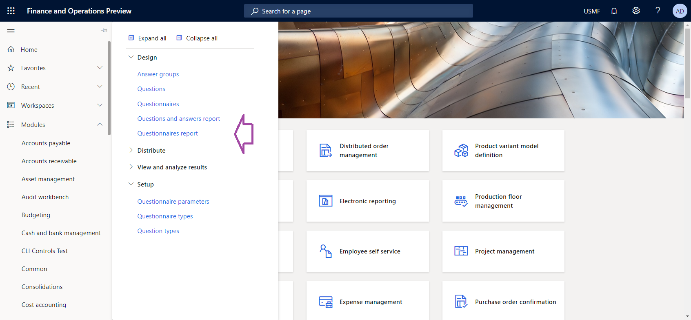
Geben Sie im Dialogfeld Fragebogenbericht Auswahlkriterien angeben. Wenden Sie einen Filter an, sodass der Bericht nur den Fragebogen SBCCrsExam enthält.
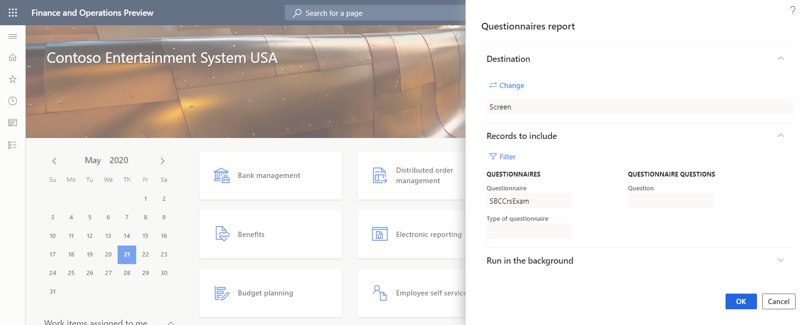
Die folgende Abbildung zeigt die generierte Version des SSRS-Berichts für den Fragebogen SBCCrsExam.
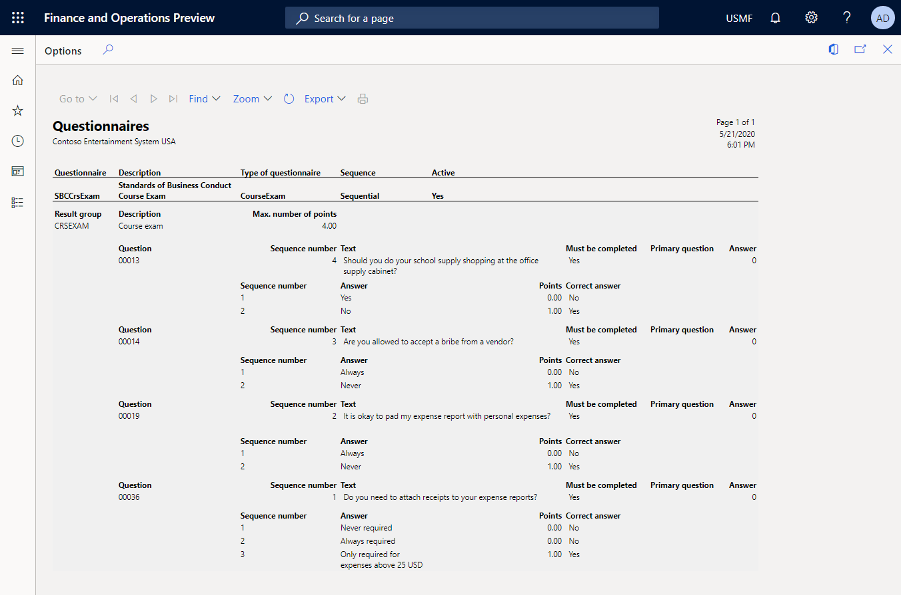
Konfigurieren des EB-Frameworks
Als Benutzer mit der Rolle "Entwickler für elektronische Berichterstellung" müssen Sie den mindestens notwendigen EB-Parameter, bevor Sie mit dem Entwerfen Ihrer neuen EB-Lösung mithilfe des EB-Rahmens beginnen.
Parameter der elektronischen Berichterstellung konfigurieren
Wechseln Sie zu Organisationsverwaltung > Arbeitsbereiche > Elektronische Berichterstellung.
Klicken Sie im Arbeitsbereich Elektronische Berichterstellung auf den Link Parameter der elektronischen Berichterstellung.
Auf der Seite Parameter für elektronische Berichterstellung legen Sie auf der Registerkarte Allgemein die Option Entwurfsmodus aktivieren auf Ja fest.
Legen Sie auf der Registerkarte Anhänge die folgenden Parameter fest:
- Setzen Sie das Feld Konfigurationen für das Unternehmen USMF auf Datei.
- Wählen Sie in den Feldern Einzelvorgangsarchiv, Temporär, Grundlage und Andere den Dateityp aus.
Weitere Informationen zu EB-Parametern finden Sie unter Konfigurieren des EB-Frameworks (This is an external link).
Aktivieren eines EB-Konfigurationsanbieters
Jede hinzugefügte EB-Konfiguration wird als Eigentum eines EB-Konfigurationsanbieters markiert. Daher müssen Sie im Arbeitsbereich Elektronische Berichterstellung einen EB-Konfigurationsanbieter aktivieren, bevor Sie mit dem Hinzufügen oder Bearbeiten von EB-Konfigurationen beginnen.
Note
Nur der Besitzer einer EB-Konfiguration kann diese bearbeiten. Daher muss im Arbeitsbereich Elektronische Berichterstellung der entsprechende EB-Konfigurationsanbieter aktiviert werden, bevor eine EB-Konfigurationen bearbeitet werden kann.
Überprüfen der Liste der EB-Konfigurationsanbieter
- Wechseln Sie zu Organisationsverwaltung > Arbeitsbereiche > Elektronische Berichterstellung.
- Wählen Sie im Arbeitsbereich Elektronische Berichterstellung im Abschnitt Zugehörige Links die Option Konfigurationsanbieter aus.
- Auf der Seite Konfigurationsanbietertabelle hat jeder Konfigurationsanbieterdatensatz einen eindeutigen Namen und eine eindeutige URL. Überprüfen Sie den Inhalt dieser Seite. Wenn bereits ein Datensatz für Litware, Inc. (
https://www.litware.com) vorhanden ist, überspringen Sie die nächste Prozedur Hinzufügen eines neuen EB-Konfigurationsanbieters.
Hinzufügen eines neuen EB-Konfigurationsanbieters
- Wählen Sie auf der Seite Konfigurationsanbieter die Option Neu aus.
- Geben Sie im Feld Name Litware, Inc. ein.
- Geben Sie im Feld Internetadresse
https://www.litware.comein. - Wählen Sie Speichern aus.
Aktivieren eines EB-Konfigurationsanbieters
- Wechseln Sie zu Organisationsverwaltung > Arbeitsbereiche > Elektronische Berichterstellung.
- Wählen Sie im Arbeitsbereich Elektronische Berichterstattung Litware, Inc. für Ihren Konfigurationsanbieter aus.
- Wählen Sie Als aktiv festlegen.
Weitere Informationen zu EB-Konfigurationsanbietern finden Sie unter Erstellen von Konfigurationsanbietern und Markieren als aktiv.
Entwerfen eines domänenspezifischen Datenmodells
Sie müssen eine neue EB-Konfiguration erstellen, die eine Datenmodell-Komponente für den Geschäftsbereich Fragebogen enthält. Dieses Datenmodell wird später als Datenquelle verwendet, wenn Sie ein EB-Format zum Generieren des Berichts Fragebogen entwerfen.
Durch Ausführen der Schritte im Abschnitt Importieren einer neuen Datenmodellkonfiguration können Sie das erforderliche Datenmodell aus der bereitgestellten XML-Datei importieren. Alternativ können Sie mit den Schritten im Abschnitt Erstellen einer neuen Datenmodellkonfiguration dieses Datennmodell neu entwerfen.
Importieren einer neuen Datenmodellkonfiguration
- Laden Sie die Datei Fragebögen model.version.1.xml herunter und speichern Sie sie auf Ihrem lokalen Computer.
- Wechseln Sie zu Organisationsverwaltung > Arbeitsbereiche > Elektronische Berichterstellung.
- Wählen Sie im Arbeitsbereich Elektronische Berichterstellung die Option Berichterstellungskonfigurationen aus.
- Wählen Sie im Aktivitätsbereich Austausch > Aus XML-Datei laden aus.
- Klicken Sie auf Durchsuchen, und wählen Sie die Datei Questionnaires model.version.1.xml aus.
- Wählen Sie OK aus, um die Konfiguration zu importieren.
Überspringen Sie den nächsten Vorgang, um fortzufahren. Erstellen Sie eine neue Datenmodellkonfiguration.
Neue Datenmodellkonfiguration erstellen
- Wechseln Sie zu Organisationsverwaltung > Arbeitsbereiche > Elektronische Berichterstellung.
- Wählen Sie im Arbeitsbereich Elektronische Berichterstellung die Option Berichterstellungskonfigurationen aus.
- Wählen Sie Konfiguration erstellen.
- Geben Sie im Drop-Down-Dialogfeld im Feld Name Fragebotenmodell ein.
- Wählen Sie Konfiguration erstellen aus, um die Konfiguration zu erstellen.
Benennen Sie das Datenmodell
- Wählen Sie auf der Seite Konfigurationen im Konfigurationsbaum Fragebogenmodell aus.
- Wählen Sie Designer aus.
- Geben Sie auf der Seite Datenmodelldesigner auf dem Inforegister Allgemein im Feld Name den Eintrag Fragebögen ein.
Hinzufügen neuer Datenmodellfeldern
Wählen Sie auf der Seite Datenmodelldesigner die Option Neu aus.
Führen Sie im Dropdown-Dialogfeld zum Hinzufügen eines Datenmodellknotens die folgenden Schritte aus:
- Wählen Sie Modellstamm als Typ des neuen Knotens aus.
- Geben Sie im Feld Name die Bezeichnung Stamm ein.
- Wählen Sie zum Hinzufügen des neuen Knotens Hinzufügen aus.
Dieser Stammdeskriptor wird verwendet, um Daten für den Bericht Fragebogen bereitzustellen. Ein einzelnes Datenmodell kann mehrere Deskriptoren haben. Jeder Deskriptor kann für ein einzelnes EB-Format angegeben werden, um Daten zu identifizieren, die zum Generieren des Berichts erforderlich sind.
Wählen Sie erneut Neu aus und führen Sie dann im Dropdown-Dialogfeld zum Hinzufügen eines Datenmodellknotens die folgenden Schritte aus:
- Wählen Sie Untergeordnetes Element eines aktiven Knotens als Typ des neuen Knotens aus.
- Geben Sie im Feld Name die Bezeichnung Firmenname ein.
- Wählen Sie im Feld Artikeltyp Zeichenfolge aus.
- Wählen Sie zum Hinzufügen des neuen Felds Hinzufügen aus.
Dieses Feld ist erforderlich, um den Namen des aktuellen Unternehmens an einen EB-Bericht zu übergeben, der dieses Datenmodell als Datenquelle verwendet.
Wählen Sie erneut Neu aus und führen Sie dann im Dropdown-Dialogfeld zum Hinzufügen eines Datenmodellknotens die folgenden Schritte aus:
- Wählen Sie Untergeordnetes Element eines aktiven Knotens als Typ des neuen Knotens aus.
- Geben Sie im Feld Name die Bezeichnung Fragebogen ein.
- Wählen Sie im Feld Artikeltyp Datensatzliste aus.
- Wählen Sie zum Hinzufügen des neuen Felds Hinzufügen aus.
Mit diesem Feld wird die Liste der Fragebögen an einen EB-Bericht übergeben, der dieses Datenmodell als Datenquelle verwendet.
Wählen Sie den Knoten Fragebogen aus.
Fügen Sie die erforderlichen Felder des bearbeitbaren Datenmodells auf dieselbe Weise hinzu, bis Sie die folgende Datenmodellstruktur abgeschlossen haben.
Feldpfad Datentyp Feldbezeichnung/Rückgabewert Stamm Der Bezugspunkt zum Anfordern von Fragebogendaten. Stamm\CompanyName Zeichenfolge Der Name des aktuellen Unternehmens. Stamm\ExecutionContext Aufzeichnen Formatausführungsdetails. Stamm \ExecutionContext \Formatname Zeichenfolge Der Name des ausgeführten EB-Formats. Stamm\Fragebogen Datensatzliste Die Liste der Fragebögen Stamm\Fragebogen\Aktiv Zeichenfolge Der Status des aktuellen Fragebogens. Stamm\Fragebogen\Code Zeichenfolge Der Code des aktuellen Fragebogens. Stamm\Fragebogen\Beschreibung Zeichenfolge Die Beschreibung des aktuellen Fragebogens. Stamm\Fragebogen\QuestionnaireType Zeichenfolge Der Typ des aktuellen Fragebogens. Stamm\Fragebogen\QuestionOrder Zeichenfolge Die numerische Reihenfolge des aktuellen Fragebogens. Stamm\Fragebogen\ResultsGroup Aufzeichnen Die Ergebnisparameter des aktuellen Fragebogens. Stamm\Fragebogen\ResultsGroup\Code Zeichenfolge Der Identifikationscode der aktuellen Ergebnisgruppe. Stamm\Fragebogen\ResultsGroup\Beschreibung Zeichenfolge Die Beschreibung der aktuellen Ergebnisgruppe. Stamm\Fragebogen\ResultsGroup\MaxNumberOfPoints Gleitkommazahl Die maximale Anzahl von Punkten, die verdient werden können. Stamm\Fragebogen\Frage Datensatzliste Die Liste der Fragen für den aktuellen Fragebogen. Stamm\Fragebogen\Frage\CollectionSequenceNumber Ganzzahl Die Folgenummer der aktuellen Antwortsammlung. Stamm\Fragebogen\Frage\ID Zeichenfolge Der Identifikationscode der aktuellen Frage. Stamm\Fragebogen\Frage\MustBeCompleted Zeichenfolge Ein Flag, das angibt, ob die aktuelle Frage beantwortet werden muss. Stamm\Fragebogen\Frage\PrimaryQuestion Zeichenfolge Ein Flag, das angibt, ob die aktuelle Frage primär ist. Stamm\Fragebogen\Frage\SequenceNumber Ganzzahl Die Folgenummer der aktuellen Frage. Stamm\Fragebogen\Frage\Text Zeichenfolge Der Text der aktuellen Frage. Stamm\Fragebogen\Frage\Antwort Datensatzliste Die Liste der Antworten für die aktuelle Frage. Stamm\Fragebogen\Frage\Antwort\CorrectAnswer Zeichenfolge Ein Flag, das angibt, ob die aktuelle Frage korrekt ist. Stamm\Fragebogen\Frage\Antwort\Punkte Gleitkommazahl Die Punkte, die verdient werden, wenn die aktuelle Antwort ausgewählt wird. Stamm\Fragebogen\Frage\Antwort\SequenceNumber Ganzzahl Die Folgenummer der aktuellen Antwort. Stamm\Fragebogen\Frage\Antwort\Text Zeichenfolge Der Text der aktuellen Antwort. Die folgende Abbildung zeigt das fertige bearbeitbare Datenmodell auf der Seite Datenmodelldesigner.
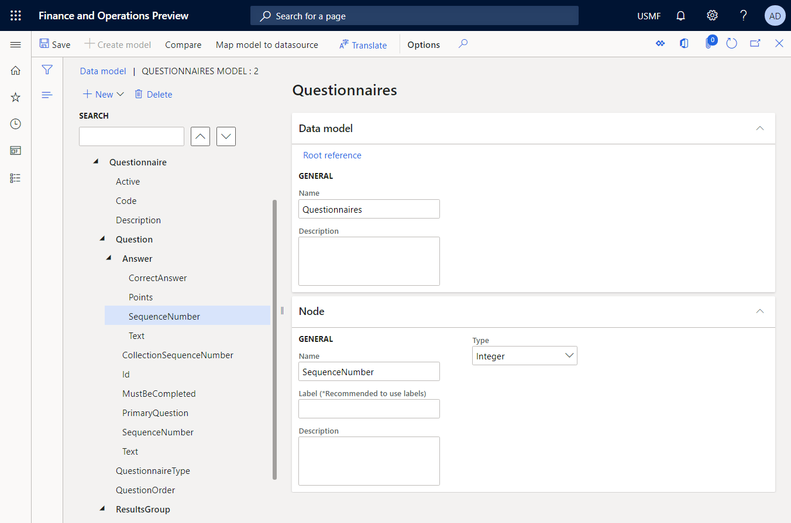
Speichern Sie die Änderungen.
Schließen Sie die Seite Datenmodelldesigner.
Vervollständigen des Datenmodellentwurfs
- Wechseln Sie zu Organisationsverwaltung > Elektronische Berichterstellung > Konfigurationen.
- Wählen Sie auf der Seite Konfigurationen im Konfigurationsbaum Fragebogenmodell aus.
- Wählen Sie im Inforegister Versionen die Konfigurationsversion mit dem Status Entwurf aus.
- Wählen Sie Status ändern > Abgeschlossen.
Der Status von Version 1 dieser Konfiguration wird von Entwurf zu Abgeschlossen geändert. Version 1 kann nicht mehr geändert werden. Diese Version enthält das konfigurierte Datenmodell und kann als Basis für andere EB-Konfigurationen verwendet werden. Version 2 dieser Konfiguration wird erstellt und hat den Status Entwurf. Sie können diese Version bearbeiten, um das Datenmodell Fragebogen anzupassen.
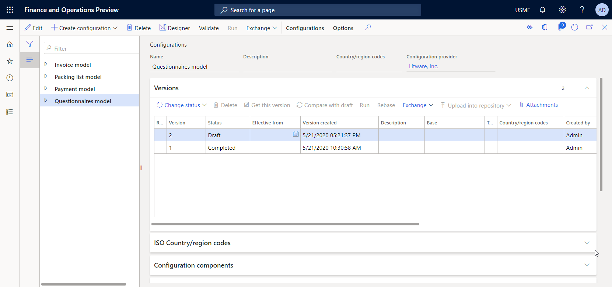
Weitere Informationen zur Versionierung für EB-Konfigurationen finden Sie unter Übersicht über die elektronische Berichterstattung (EB).
Note
Das konfigurierte Datenmodell ist Ihre abstrakte Darstellung der Fragebogen-Geschäftsdomäne und enthält keine Beziehungen zu spezifischen Artefakten in Microsoft Dynamics 365 Finance.
Entwerfen einer Modellzuordnung für das konfigurierte Datenmodell
Als Benutzer in der Rolle des Entwicklers für elektronische Berichterstellung müssen Sie eine neue EB-Konfiguration erstellen, die eine Komponente Modellabbildung für das Datenmodell Fragebogen enthält. Da diese Komponente das konfigurierte Datenmodell für Finanzen implementiert, ist es finanzspezifisch. Sie müssen die Modellzuordnungskomponente so konfigurieren, dass die Anwendungsobjekte angegeben werden, die zum Ausfüllen des konfigurierten Datenmodells mit Anwendungsdaten zur Laufzeit verwendet werden müssen. Um diese Aufgabe durchzuführen, müssen Sie die Implementierungsdetails der Datenstruktur der Geschäftsdomäne Fragebogen im Finanzbereich berücksichtigen.
Durch Ausführen der Schritte im Abschnitt Importieren einer neuen Modellzuordnungskonfiguration können Sie die erforderliche Modellzuordungskonfiguration aus der bereitgestellten XML-Datei importieren. Alternativ können Sie mit den Schritten im Abschnitt Erstellen einer neuen Modellzuordnungskonfiguration diese Modellzuordnung neu entwerfen.
Importieren einer neuen Modellzuordnungskonfiguration
- Laden Sie die Datei Questionnaires mapping.version.1.1.xml herunter und speichern Sie sie auf Ihrem lokalen Computer.
- Wechseln Sie zu Organisationsverwaltung > Arbeitsbereiche > Elektronische Berichterstellung.
- Wählen Sie im Arbeitsbereich Elektronische Berichterstellung die Option Berichterstellungskonfigurationen aus.
- Wählen Sie im Aktivitätsbereich Austausch > Aus XML-Datei laden aus.
- Klicken Sie auf Durchsuchen und wählen Sie die Datei Questionnaires mapping.version.1.1.xml aus.
- Wählen Sie OK aus, um die Konfiguration zu importieren.
Überspringen Sie den nächsten Vorgang, um fortzufahren. Erstellen einer neuen Datenmodellkonfiguration.
Erstellen einer neuen Modellzuordnungskonfiguration
Wechseln Sie zu Organisationsverwaltung > Elektronische Berichterstellung > Konfigurationen.
Wählen Sie auf der Seite Konfigurationen im Konfigurationsbaum Fragebogenmodell aus.
Wählen Sie Konfiguration erstellen.
Führen Sie im Drop-Down-Dialogfeld die folgenden Schritte aus:
- Wählen Sie im Feld Neu die Option Modellzuordnung basierend auf Datenmodellfragebogen.
- Geben Sie im Feld Name Fragebogenzuordnung ein.
- Wählen Sie im Feld Datenmodelldefinition die Definition Stamm aus.
- Wählen Sie Konfiguration erstellen aus, um die Konfiguration zu erstellen.
Entwerfen einer neuen Modellzuordnungskomponente
- Wählen Sie auf der Seite Konfigurationen im Konfigurationsbaum Fragebogenzuordnung aus.
- Wählen Sie Designer aus, um die Liste der Zuordnungen zu öffnen.
- Wählen Sie die Zuordnung Fragebogenzuordnung aus, die automatisch für die Definition Stamm hinzugefügt wurden
- Wählen Sie Designer, um mit der Konfiguration der ausgewählten Zuordnung zu beginnen.
Für die Definition Stamm wird automatisch eine neue Zuordnung hinzugefügt. Diese Zuordnung hat die Richtung Zum Modell. Daher kann diese Zuordnung verwendet werden, um ein Datenmodell mit den erforderlichen Daten zu füllen.
Hinzufügen von Datenquellen für den Zugriff auf Anwendungstabellen
Sie müssen Datenquellen konfigurieren, um auf die Anwendungstabellen zuzugreifen, die Fragebogendetails enthalten.
Wählen Sie auf der Seite Modellzuordnungsdesigner im Bereich Datenquellentypen die Option Dynamics 365 for Operations\ Tabellendatensätze aus.
Fügen Sie eine neue Datenquelle hinzu, die für den Zugriff auf die KMCollection-Tabelle verwendet wird, wobei jeder Datensatz einen einzelnen Fragebogen darstellt:
- Wählen Sie Stamm hinzufügen im Bereich Datenquellen aus.
- Geben Sie im Dialogfeld im Feld Name den Eintrag Fragebogen ein.
- Geben Sie im Feld Tabelle den Eintrag KMCollection ein.
- Setzen Sie die Option Abfrage anfordern auf Ja. Sie können zur Laufzeit dann Optionen von Filtern für diese Tabelle im Systemabfrage-Dialogfeld angeben.
- Wählen Sie OK aus, um die neue Datenquelle hinzuzufügen.
Wählen Sie im Bereich Datenquellentypen den Eintrag Dynamics 365 for Operations\Tabellendatensätze aus.
Fügen Sie eine neue Datenquelle hinzu, die für den Zugriff auf die KMQuestion-Tabelle verwendet wird, wobei jeder Datensatz eine einzelne Frage in einem Fragebogen darstellt:
- Wählen Sie Stamm hinzufügen im Bereich Datenquellen aus.
- Geben Sie im Dialogfeld im Feld Name den Eintrag Frage ein.
- Geben Sie im Feld Tabelle den Eintrag KMQuestion ein.
- Wählen Sie OK aus, um die neue Datenquelle hinzuzufügen.
Wählen Sie im Bereich Datenquellentypen den Eintrag Dynamics 365 for Operations\Tabellendatensätze aus.
Fügen Sie einen neuen Datenquellenversuch hinzu, der für den Zugriff auf die KMAnswer-Tabelle verwendet wird, wobei jeder Datensatz eine einzelne Antwort auf eine Frage in einem Fragebogen darstellt:
- Wählen Sie Stamm hinzufügen im Bereich Datenquellen aus.
- Geben Sie im Feld Name die Bezeichnung Antwort ein.
- Geben Sie im Feld Tabelle den Eintrag KMAnswer ein.
- Wählen Sie OK aus, um die neue Datenquelle hinzuzufügen.
Wählen Sie im Bereich Datenquellentypen den Eintrag Funktionen\Berechnetes Feld aus.
Fügen Sie ein neues berechnetes Feld hinzu, mit dem aus jedem Datensatz der übergeordneten KMQuestionResultGroup-Tabelle aus jedem Datensatz der übergeordneten KMCollection-Tabelle zugegriffen wird:
- Wählen Sie Fragebogen im Bereich Datenquellen aus.
- Wählen Sie Hinzufügen aus.
- Geben Sie im Dialogfeld im Feld Name den Eintrag $ResultGroup ein.
- Wählen Sie Formel bearbeiten aus.
- Geben Sie im EB-Formeleditor im Feld Formel den Eintrag FIRSTORNULL(@.'<Relations'.KMQuestionResultGroup) ein, um den Pfad der 1:n-Beziehung zwischen den KMCollection- und KMQuestionResultGroup-Tabellen zu verwenden.
- Klicken Sie auf Speichern und schließen Sie den Formeleditor.
- Wählen Sie OK aus, um das neue berechnete Feld hinzuzufügen.
Wählen Sie im Bereich Datenquellentypen den Eintrag Funktionen\Berechnetes Feld aus.
Fügen Sie ein neues berechnetes Feld hinzu, mit dem auf Fragendatensätze der KMQuestion-Tabelle aus jedem Datensatz der übergeordneten KMCollectionQuestion-Tabelle zugegriffen wird:
- Wählen Sie Fragebogen im Bereich Datenquellen aus.
- Erweitert Sie den Knoten <Beziehungen, der 1:n-Beziehungen der KMCollection-Tabelle enthält.
- Wählen Sie die entsprechende Tabelle KMCollectionQuestion und dann Hinzufügen aus.
- Geben Sie im Dialogfeld im Feld Name den Eintrag $Frage ein.
- Wählen Sie Formel bearbeiten aus.
- Geben Sie im Formeleditor im Feld Formel den Eintrag FIRSTORNULL (FILTER(Question, Question.kmQuestionId = @.kmQuestionId)) ein, um die entsprechenden Fragendatensätze aus der KMQuestion-Tabelle zurückzugeben.
- Klicken Sie auf Speichern und schließen Sie den Formeleditor.
- Wählen Sie OK aus, um das neue berechnete Feld hinzuzufügen.
Wählen Sie im Bereich Datenquellentypen den Eintrag Funktionen\Berechnetes Feld aus.
Fügen Sie ein neues berechnetes Feld hinzu, mit dem auf Antwortdatensätze der KMAnswer-Tabelle aus jedem Datensatz der übergeordneten KMQuestion-Tabelle zugegriffen wird:
- Wählen Sie im Bereich Datenquellen den Eintrag Questionnaire.<Relations.KMCollectionQuestion.$Question und dann Hinzufügen aus.
- Geben Sie im Dialogfeld im Feld Name den Eintrag $Antwort ein.
- Wählen Sie Formel bearbeiten aus.
- Geben Sie im Formeleditor im Feld Formel den Eintrag FILTER (Answer, Answer.kmAnswerCollectionId = @.kmAnswerCollectionId), um die entsprechenden Antwortdatensätze aus der KMAnswer-Tabelle zurückzugeben.
- Klicken Sie auf Speichern und schließen Sie den Formeleditor.
- Wählen Sie OK aus, um das neue berechnete Feld hinzuzufügen.
Wählen Sie im Bereich Datenquellentypen den Eintrag Dynamics 365 for Operations\Table aus.
Fügen Sie eine neue Datenquelle hinzu, die für den Zugriff auf Methoden der CompanyInfo-Tabelle verwendet wird. Beachten Sie, dass die Methode find() dieser Tabelle einen Datensatz zurück, der für ein Unternehmen der aktuellen Finanzinstanz steht, in dessen Kontext diese Zuordnung aufgerufen wird.
- Wählen Sie Stamm hinzufügen im Bereich Datenquellen aus.
- Geben Sie im Dialogfeld im Feld Name den Eintrag CompanyInfo ein.
- Geben Sie im Feld Tabelle den Eintrag CompanyInfo ein.
- Wählen Sie OK aus, um die neue Datenquelle hinzuzufügen.
Hinzufügen von Datenquellen für den Zugriff auf Anwendungsaufzählungen
Sie müssen Datenquellen konfigurieren, um auf Anwendungsaufzählungen zuzugreifen und deren Werte mit den Werten der Felder des Typs Aufzählung in den Anwendungstabellen zu vergleichen. Sie müssen das Ergebnis des Vergleichs verwenden, um die entsprechenden Felder des Datenmodells auszufüllen.
Wählen Sie auf der Seite Modellzuordnungsdesigner im Bereich Datenquellentypen den Eintrag Dynamics 365 for Operations\ Aufzählung aus.
Fügen Sie eine neue Datenquelle hinzu, mit der auf die Werte der Aufzählung EnumAppNoYes zugegriffen wird:
- Wählen Sie Stamm hinzufügen im Bereich Datenquellen aus.
- Geben Sie im Dialogfeld im Feld Name den Eintrag EnumAppNoYes ein.
- Geben Sie im Feld Aufzählung den Eintrag NoYes ein.
- Wählen Sie OK aus, um die neue Datenquelle hinzuzufügen.
Wählen Sie im Bereich Datenquellentypen den Eintrag Dynamics 365 for Operations\ Aufzählung aus.
Fügen Sie eine neue Datenquelle hinzu, mit der auf die Werte der Aufzählung KMCollectionQuestionMode zugegriffen wird:
- Wählen Sie Stamm hinzufügen im Bereich Datenquellen aus.
- Geben Sie im Drop-Down-Dialogfeld im Feld Name den Eintrag EnumAppQuestionOrder ein.
- Geben Sie im Feld Aufzählung den Eintrag KMCollectionQuestionMode ein.
- Wählen Sie OK aus, um die neue Datenquelle hinzuzufügen.
Hinzufügen von EB-Beschriftungen, um einen Bericht in einer bestimmten Sprache zu erzeugen
Sie können EB-Beschriftungen hinzufügen, um einige Ihrer Datenquellen so zu konfigurieren, dass Werte zurückgegeben werden, die von der Sprache abhängen, die im Kontext des Aufrufs der Modellzuordnung definiert ist.
Wählen Sie auf der Seite Modellzuordnungsdesigner im Bereich Datenquellen den Eintrag Antworten und dann Bearbeiten aus.
Aktivieren Sie das Feld Beschriftung.
Wählen Sie Übersetzen aus.
Führen Sie im Dialogfeld Textübersetzung die folgenden Schritte aus:
- Geben Sie im Feld Beschriftungskennung den Wert PositiveAnswer ein.
- Geben Sie im Feld Text in Standardsprache den Eintrag Ja ein.
- Wählen Sie Übersetzen aus.
- Geben Sie im Feld Beschriftungskennung den Eintrag NegativeAnswer ein.
- Geben Sie im Feld Text in Standardsprache den Eintrag Nein ein.
- Wählen Sie Übersetzen aus.
Schließen Sie das Dialogfeld Textübersetzung.
Wählen Sie Abbrechen aus.
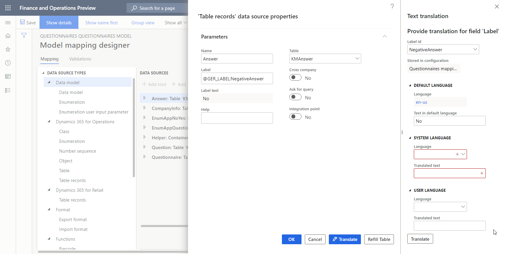
Sie haben EB-Beschriftungen nur für die Standardsprache eingegeben. Informationen darüber, wie EB-Etiketten in andere Sprachen übersetzt werden können, finden Sie unter Entwerfen mehrsprachiger Berichte.
Hinzufügen einer Datenquelle, um die Ergebnisse des Vergleichs von Aufzählungswerten mit einem Textwert
Da Sie die Ergebnisse des Vergleichs zwischen Aufzählungswerten und Textwerten für Differenzquellen mehrmals transformieren müssen, empfiehlt es sich, diese Logik als einzelne Datenquelle zu konfigurieren. Um diese Datenquelle jedoch wiederverwendbar zu machen, müssen Sie sie dann als parametrisierte Datenquelle konfigurieren. Weitere Informationen finden Sie unter Unterstützung für Parameter bei Aufrufen von EB-Datenquellen des Feldtyps "Berechnet".
Wählen Sie auf der Seite Modellzuordnungsdesigner im Feld Datenquellentypen den Eintrag Allgemein\Leerer Container aus.
Hinzufügen einer neuen Container-Datenquelle;
- Wählen Sie Stamm hinzufügen im Bereich Datenquellen aus.
- Geben Sie im Dialogfeld im Feld Name den Eintrag Helper ein.
- Wählen Sie OK aus, um die neue Container-Datenquelle hinzuzufügen.
Wählen Sie im Bereich Datenquellentypen den Eintrag Funktionen\Berechnetes Feld aus.
Hinzufügen einer neuen Datenquelle:
Wählen Sie im Bereich Datenquellen den Eintrag Helper aus.
Wählen Sie Hinzufügen aus.
Geben Sie im Drop-Down-Dialogfeld im Feld Name den Eintrag NoYesEnumToString ein.
Wählen Sie Formel bearbeiten aus.
Wählen Sie im Formeleditor Parameter aus.
Führen Sie die folgenden Schritte aus, um Parameter für den konfigurierten Ausdruck anzugeben:
- Wählen Sie Neu aus.
- Geben Sie im Dialogfeld im Feld Name den Eintrag Argument ein.
- Wählen Sie im Feld Typ den Datentyp Boolesch aus.
- Wählen Sie OK.
Geben Sie im Feld Formel den Eintrag IF (Argument = true, @"GER_LABEL:PositiveAnswer", @"GER_LABEL:NegativeAnswer"), um den Text des entsprechenden EB-Labels einzugeben. Dies hängt von der Sprache des Ausführungskontexts und von dem Wert des angegebenen Parameters ab.
Klicken Sie auf Speichern und schließen Sie den Formeleditor.
Wählen Sie OK aus, um die neue Datenquelle hinzuzufügen.
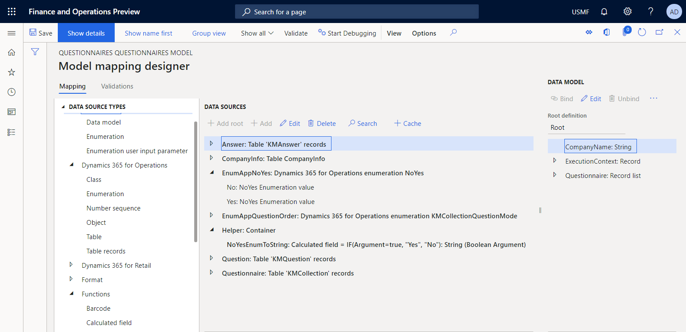
Binden von Datenquellen an Datenmodellfelder
Sie müssen die konfigurierten Datenquellen an die Felder des Datenmodells binden, um anzugeben, wie das Datenmodell zur Laufzeit mit Anwendungsdaten gefüllt wird.
Wählen Sie auf der Seite Modelzuordnungsdesigner im Bereich Datenmodell den Eintrag CompanyName aus.
Erweitern Sie im Bereich Datenquellen den Eintrag CompanyInfo und führen Sie dann die folgenden Schritte durch:
- Erweitern Sie den Knoten CompanyInfo.find(), der für die Methode find() der CompanyInfo-Tabelle steht.
- Wählen Sie CompanyInfo.find (). Name aus.
- Wählen Sie Binden, um den Namen des Unternehmens einzugeben, für das die konfigurierte Modellzuordnung zur Laufzeit aufgerufen wird.
Wählen Sie Fragebogen im Bereich Datenmodell aus.
Wählen Sie im Bereich Datenquellen den Eintrag Fragebogen und dann Binden aus, um die Felder des Fragebogens auszufüllen.
Erweitern Sie im Bereich Datenmodell den Eintrag Fragebogen und führen Sie dann die folgenden Schritte durch:
- Wählen Sie Aktiv im Bereich Datenmodell aus.
- Wählen Sie Bearbeiten im Bereich Datenmodell aus.
- Geben Sie im Feld Formel den Eintrag Helper.NoYesEnumToString ( @.Active = EnumAppNoYes.Yes) ein, um das text- und sprachabhängige Ergebnis des Vergleichs zwischen Aufzählungswerten zu füllen.
Binden Sie Datenquellen weiterhin auf dieselbe Weise an Datenmodellfelder, bis Sie das folgende Ergebnis erzielen.
Feldpfad Datentyp Vorgang Bindungsausdruck CompanyName Zeichenfolge Binden CompanyInfo.'find()'.Name Fragebogen Datensatzliste Binden Fragebogen Fragebogen\Aktiv Zeichenfolge Bearbeiten Helper.NoYesEnumToString(@.active = EnumAppNoYes.Yes) Fragebogen\Code Zeichenfolge Binden @.kmCollectionId Fragebogen\Beschreibung Zeichenfolge Binden @.Description Fragebogen\QuestionnaireType Zeichenfolge Binden @.'>Relations'.kmCollectionTypeId.Description Fragebogen\QuestionOrder Zeichenfolge Bearbeiten CASE (@.questionMode,
EnumAppQuestionOrder.Conditional, "Conditional",
EnumAppQuestionOrder.Random, "Zufällig (Prozentsatz im Fragebogen)",
EnumAppQuestionOrder.RandomGroup, "Zufällig (Prozentsatz in Ergebnisgruppen)",
EnumAppQuestionOrder.Sequence, "Sequenziell",
"")Fragebogen\ResultsGroup Aufzeichnen Fragebogen\ResultsGroup\Code Zeichenfolge Binden @. ' $ResultGroup'.kmQuestionResultGroupId Fragebogen\ResultsGroup\Beschreibung Zeichenfolge Binden @.'$ResultGroup'.description Fragebogen\ResultsGroup\MaxNumberOfPoints Gleitkommazahl Binden @.'$ResultGroup'.maxPoint Fragebogen\Frage Datensatzliste Binden @.'<Relations'.KMCollectionQuestion Fragen\Frage\CollectionSequenceNumber Ganzzahl Binden @.answerCollectionSequenceNumber Fragebogen\Frage\ID Zeichenfolge Binden @.kmQuestionId Fragebogen\Frage\MustBeCompleted Zeichenfolge Bearbeiten Helper.NoYesEnumToString(@.mandatory = EnumAppNoYes.Yes) Fragebogen\Frage\PrimaryQuestion Zeichenfolge Binden @.parentQuestionId Fragebogen\Frage\SequenceNumber Ganzzahl Binden @.SequenceNumber Fragebogen\Frage\Text Zeichenfolge Binden @.'$Question'.text Fragebogen\Frage\Antwort Datensatzliste Binden @.'$Question'.'$Answer' Fragebogen\Frage\Antwort\CorrectAnswer Zeichenfolge Bearbeiten Helper.NoYesEnumToString(@.correctAnswer = EnumAppNoYes.Yes) Fragebogen\Frage\Antwort\Punkte Gleitkommazahl Binden @.point Fragebogen\Frage\Antwort\SequenceNumber Ganzzahl Binden @.sequenceNumber Fragebogen\Frage\Antwort\Text Zeichenfolge Binden @.text Die folgende Abbildung zeigt den Endzustand der konfigurierten Modellzuordnung auf der Seite Modellzuordnungsdesigner.
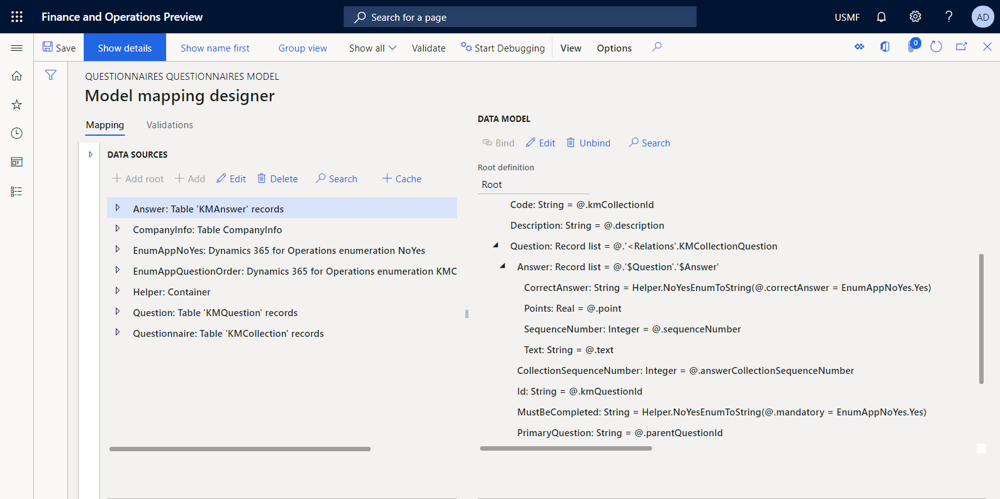
Speichern Sie die Änderungen.
Schließen Sie die Seite Modellzuordnungsdesigner.
Vervollständigen des Designs der Modellzuordnung
- Wechseln Sie zu Organisationsverwaltung > Elektronische Berichterstellung > Konfigurationen.
- Wählen Sie auf der Seite Konfigurationen im Konfigurationsbaum Fragebogenzuordnung aus.
- Wählen Sie im Inforegister Versionen die Konfigurationsversion mit dem Status Entwurf aus.
- Wählen Sie Status ändern > Abgeschlossen.
Der Status von Version 1.1 dieser Konfiguration wird von Entwurf zu Abgeschlossen geändert. Version 1.1 kann nicht mehr geändert werden. Diese Version enthält das konfigurierte Modellzuordnung und kann als Basis für andere EB-Konfigurationen verwendet werden. Version 1.2 dieser Konfiguration wird erstellt und hat den Status Entwurf. Sie können diese Version bearbeiten, um die Konfiguration Fragebogenzuordnung anzupassen.
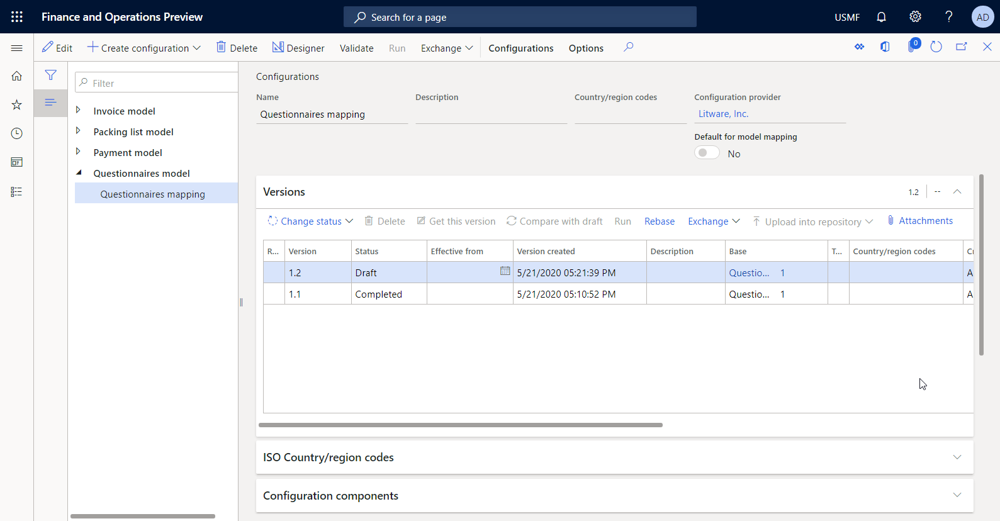
Note
Die konfigurierte Modellzuordnung ist Ihre finanzspezifische Implementierung des abstrakten Datenmodells, das die Geschäftsdomäne Fragebogen darstellt.
Entwerfen einier Vorlage für einen benutzerdefinierten Bericht
Das EB-Framework verwendet vordefinierte Vorlagen, um Berichte in Microsoft Office-Formaten zu generieren (Excel-Arbeitsmappen oder Word-Dokumente) zu erstellen. Während der Erstellung des erforderlichen Berichts wird eine Vorlage mit den erforderlichen Daten gemäß dem konfigurierten Datenfluss ausgefüllt. Daher müssen Sie zuerst eine Vorlage für Ihren benutzerdefinierten Bericht entwerfen. Diese Vorlage muss als Excel-Arbeitsmappe konzipiert sein, deren Struktur das Layout eines benutzerdefinierten Berichts darstellt. Sie müssen jedes Excel-Element benennen, das Sie mit den erforderlichen Daten füllen möchten.
- Laden Sie die Datei Questionnaires report template.xslx herunter und speichern Sie sie auf Ihrem lokalen Computer.
- Öffnen Sie die Datei in Excel und überprüfen Sie die Struktur der Arbeitsmappe.
Wie die folgende Abbildung zeigt, wurde die heruntergeladene Vorlage so gestaltet, dass bestimmte Fragebögen gedruckt werden, in denen die Fragen eines Fragebogens zusammen mit den entsprechenden Antworten dargestellt werden.
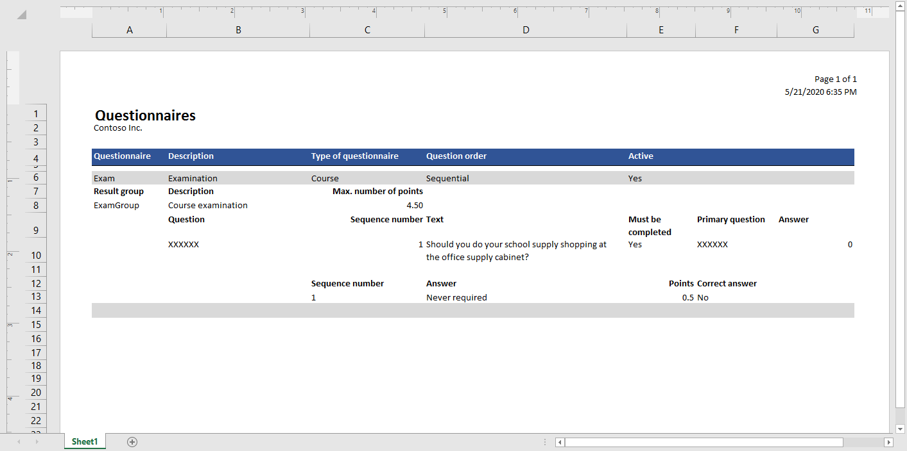
Zu dieser Vorlage wurden Excel-Namen hinzugefügt, um die Details des Fragebogens auszufüllen. Mit dem Namensmanager können Sie die Excel-Namen überprüfen.
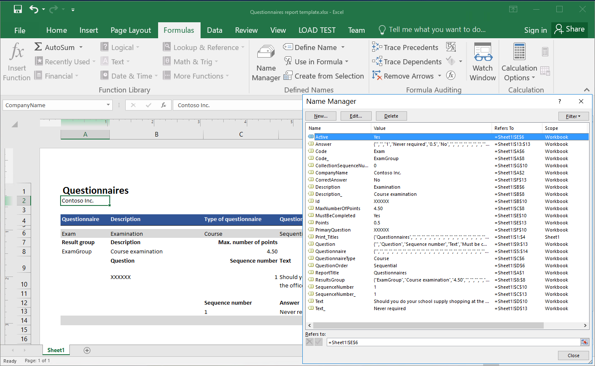
Berichtsbezeichnungen wurden als fester Text in englischer Sprache hinzugefügt. Sie können die Berichtsbeschriftungen durch neue Excel-Namen ersetzen, die die Beschriftungen mit sprachabhängigem Text ausfüllen, indem Sie das EB-Format verwenden Beschriftungen, wie Sie es für sprachabhängige Ausdrücke in der konfigurierten Modellzuordnung getan haben. In diesem Fall müssen EB-Beschriftungen im bearbeitbaren EB-Format hinzugefügt werden.
Wie die folgende Abbildung zeigt, wurde der benutzerdefinierte Berichtskopf angegeben, damit Excel Paging ausführen kann.
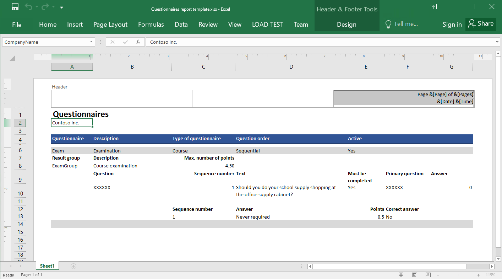
Entwerfen eines Formats
Als Benutzer in der Rolle des Electronic Reporting Functional Consultant müssen Sie eine neue EB-Konfiguration erstellen, die eine Komponente Format enthält. Sie müssen die Formatkomponente konfigurieren, um anzugeben, wie eine Berichtsvorlage zur Laufzeit mit den erforderlichen Daten gefüllt wird.
Durch Ausführen der Schritte im Abschnitt Importieren einer entworfenen Formatkonfiguration können Sie das erforderliche Format aus der bereitgestellten XML-Datei importieren. Alternativ können Sie mit den Schritten im Abschnitt Erstellen einer neuen Formatkonfiguration dieses Format neu entwerfen.
Importieren einer entworfenen Formatkonfiguration
- Laden Sie die Datei Questionnaires format.version.1.1.xml herunter und speichern Sie sie auf Ihrem lokalen Computer.
- Wechseln Sie zu Organisationsverwaltung > Arbeitsbereiche > Elektronische Berichterstellung.
- Wählen Sie im Arbeitsbereich Elektronische Berichterstellung die Option Berichterstellungskonfigurationen aus.
- Wählen Sie im Aktivitätsbereich Austausch > Aus XML-Datei laden aus.
- Klicken Sie auf Durchsuchen und wählen Sie die Datei Questionnaires format.version.1.1.xml aus.
- Wählen Sie OK aus, um die Konfiguration zu importieren.
Überspringen Sie den nächsten Vorgang, um fortzufahren. Erstellen einer neuen Formatkonfiguration.
Dient zum Erstellen einer neuen Format-Konfiguration.
Wechseln Sie zu Organisationsverwaltung > Elektronische Berichterstellung > Konfigurationen.
Wählen Sie auf der Seite Konfigurationen im Konfigurationsbaum Fragebogenmodell aus.
Wählen Sie Konfiguration erstellen.
Führen Sie im Drop-Down-Dialogfeld die folgenden Schritte aus:
Wählen Sie im Feld Neu die Option Format basierend auf Datenmodellfragebogen.
Geben Sie im Feld Name den Eintrag Fragebogenbericht ein.
Wählen Sie im Feld Datenmodellversion den Eintrag 1 aus.
Note
- Wenn Sie eine bestimmte Version des Basisdatenmodells auswählen, wird Ihnen die Struktur der entsprechenden Version des Datenmodells als Struktur der Datenquelle Modell im erstellten Format dargestellt.
- Dieses Feld muss nicht ausgefüllt werden. In diesem Fall wird die Struktur der Version Entwurf des Datenmodells als Struktur der Datenquelle Modell in dem von Ihnen erstellten Format dargestellt. Sie können dann Ihr Modell anpassen und diese Anpassungen sofort in Ihrem Format anzeigen. Dieser Ansatz kann die Effizienz des EB-Lösungsdesigns verbessern, wenn Sie Ihr Datenmodell, Ihre Modellzuordnung und Ihr Format gleichzeitig konfigurieren.
- Wenn Sie eine bestimmte Version des Basisdatenmodells auswählen, können Sie später zur Verwendung der Version Entwurf wechseln, wenn Sie mit der Bearbeitung eines Formats beginnen.
Wählen Sie im Feld Datenmodelldefinition die Definition Stamm aus.
Wählen Sie Konfiguration erstellen aus, um die Konfiguration zu erstellen.
Importieren einer Berichtvorlage
Wählen Sie auf der Seite Konfigurationen im Konfigurationsbaum Fragebogenbericht aus.
Wählen Sie Designer aus, um ein benutzerdefiniertes Format zu konfigurieren.
Wählen Sie auf der Seite Formatdesigner im Aktivitätsbereich Importieren > Aus Excel importieren aus.
Führen Sie im Dialogfeld die folgenden Schritte aus:
- Wählen Sie Vorlage hinzufügen aus.
- Suchen und wählen Sie die lokal gespeicherte Datei Questionnaires report template.xslx und dann Öffnen aus.
- Wählen Sie OK aus, um die Vorlage zu importieren.
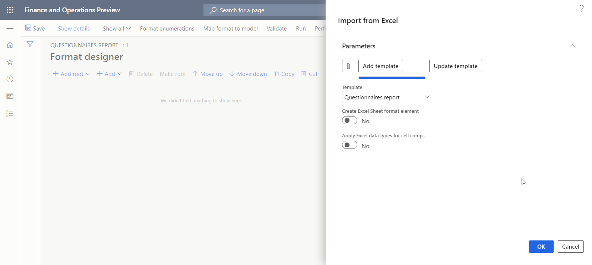
Das Formatelement Excel\Datei wird automatisch als Stammelement in das bearbeitbare Format eingefügt. Zusätzlich wird entweder das Formatelement Excel\Bereich oder das Formatelement Excel\Zelle automatisch für jeden erkannten Excel-Namen der importierten Vorlage hinzugefügt. Das Format Excel\Header, in dem das verschachtelte Element String enthalten ist, wird automatisch entsprechend der Header-Einstellung der importierten Vorlage hinzugefügt.
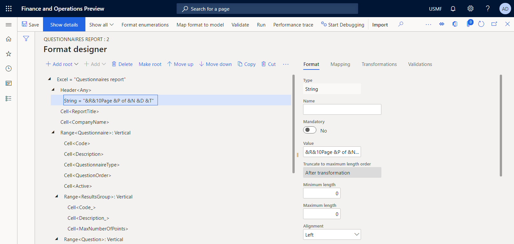
Konfigurieren eines Formats
Wählen Sie auf der Seite Formatdesigner im Formatbaum das Stammelement Excel aus.
Geben Sie auf der Registerkarte Format rechts auf der Seite im Feld Name den Eintrag Bericht ein.
Wählen Sie im Feld Spracheinstellungen den Eintrag Benutzerpräferenz aus, um den Bericht in der vom Benutzer bevorzugten Sprache auszuführen.
Wählen Sie im Feld Kulturpräferenz den Eintrag Benutzerpräferenzen aus, um den Bericht in der vom Benutzer bevorzugten Kultur auszuführen.
Informationen zum Festlegen der Sprach- und Kulturkontexte für einen EB-Prozess finden Sie unter Entwerfen mehrsprachiger Berichte.
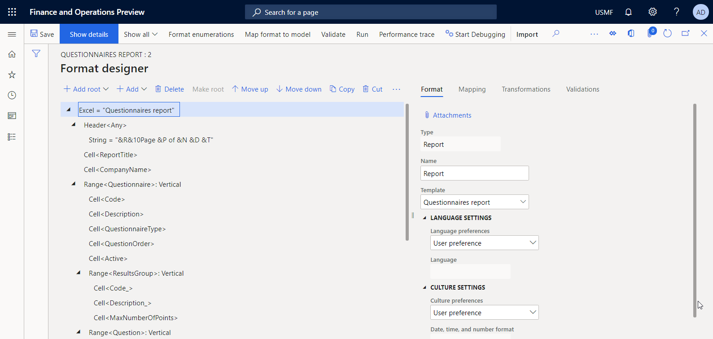
Erweitern Sie im Formatbaum den Stammknoten und wählen Sie dann ResultsGroup aus.
Wählen Sie auf der Registerkarte Format im Feld Replikationsrichtung den Eintrag Keine Replikation aus, weil Sie nicht erwarten, mehrere Ergebnisgruppen für einen einzelnen Fragebogen zu haben.
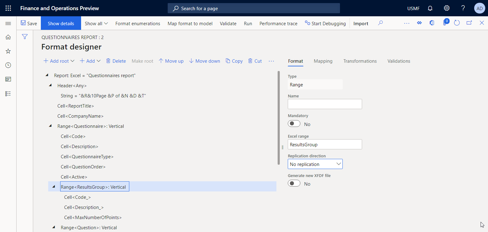
Wählen Sie Speichern aus.
Definieren Sie die Datenbindung für einen Berichtstitel
Sie müssen eine Datenbindung für ein Formatelement angeben, mit dem der Titel eines generierten Berichts ausgefüllt wird.
Wählen Sie auf der Seite Formatdesigner auf der Registerkarte Zuordnung rechts das Element Bericht\ReportTitle aus.
Wählen Sie Formel bearbeiten aus.
Wählen Sie im Formeleditor Übersetzen aus.
Führen Sie im Dialogfeld Textübersetzung die folgenden Schritte aus:
- Geben Sie im Feld Beschriftungskennung den Eintrag ReportTitle ein.
- Geben Sie im Feld Text in Standardsprache den Eintrag Fragebogenbericht ein.
- Wählen Sie Übersetzen und dann Speichern aus.
- Wählen Sie Übersetzen aus, um das Dialogfeld Textübersetzung zu schließen.
Schließen Sie den Formeleditor.
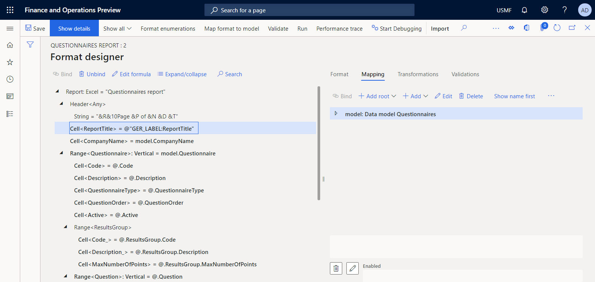
Mit dieser Methode können Sie alle anderen Beschriftungen der aktuellen Vorlagensprache abhängig machen. Informationen dazu, wie die hinzugefügten Beschriftungen einer einzelnen EB-Konfiguration in alle unterstützten Sprachen übersetzt werden können, finden Sie unter Entwerfen mehrsprachiger Berichte.
Überarbeiten der Modelldatenquelle
- Wählen Sie auf der Seite Formatdesigner auf der Registerkarte Zuordnung die Datenquelle Modell aus, die für das Basisdatenmodell dieses EB-Formats steht.
- Wählen Sie Bearbeiten aus.
- Überprüfen Sie die Informationen im Dialogfeld Datenquelleneigenschaften. Diese Datenquelle steht für die Version 1 des Datenmodell Fragebögen, die sich in der EB-Konfiguration Fragebogenmodell befinden.
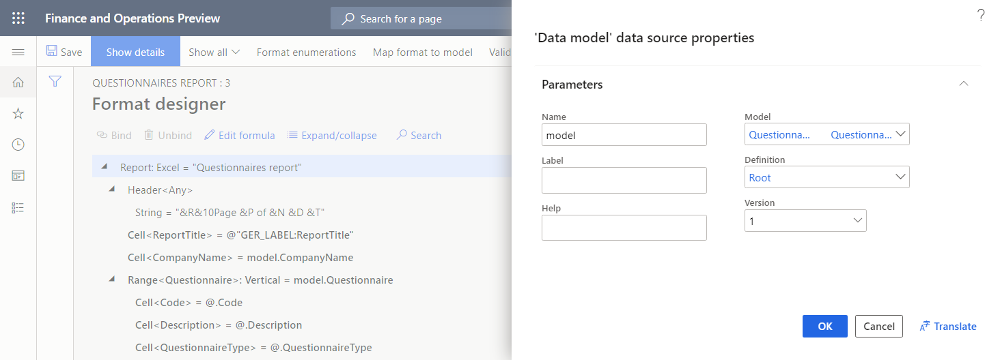
Binden von Formatelementen an Datenquellenfelder
Um anzugeben, wie eine Vorlage zur Laufzeit ausgefüllt wird, müssen Sie jedes Formatelement, das einem geeigneten Excel-Namen zugeordnet ist, an ein einzelnes Feld der Datenquelle dieses Formats binden.
Wählen Sie auf der Seite Formatdesigner im Formatbaum das Formatelement Bericht\CompanyName.
Wählen Sie auf der Registerkarte Zuordnung das Datenquellenfeld model.CompanyName des Typs String aus.
Wählen Sie Binden aus, um einen Firmennamen in eine Vorlage einzugeben.
Wählen Sie im Formatbaum das Element Bericht \Fragebogen aus.
Wählen Sie auf der Registerkarte Zuordnung das Datenquellenfeld model.Questionnaire des Typs Zuordnungsliste aus.
Wählen Sie Bindung aus.
Wählen Sie Details anzeigen, um weitere Details für Formatelemente anzuzeigen.
Das Bereichsformatelement Fragebogen ist als vertikal repliziert konfiguriert. Wenn es an einer Datenquelle des Typs Datensatzliste gebunden ist, wird der entsprechende Bereich Fragebogen der Excel-Vorlage für jeden Datensatz der gebundenen Datenquelle wiederholt.
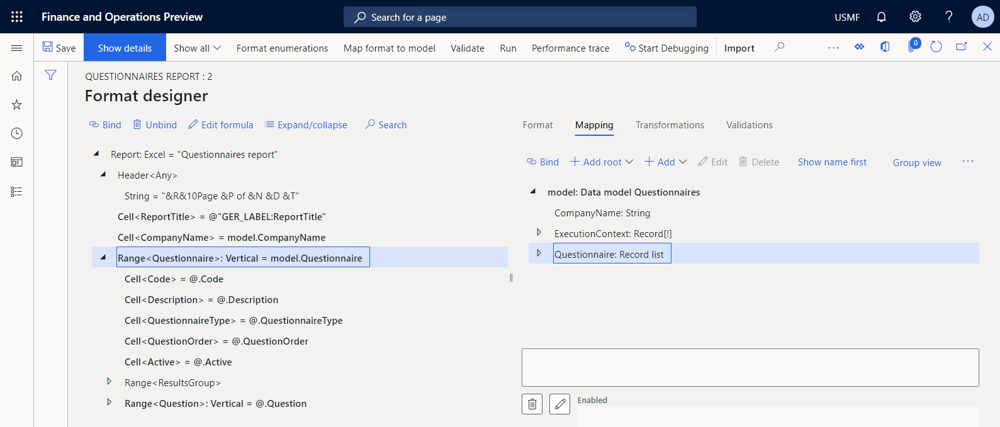
Weil der Bereich Fragebogen der Excel-Vorlage zwischen den Zeilen 5 und 14 definiert ist, werden diese Zeilen für jeden gemeldeten Fragebogen wiederholt.
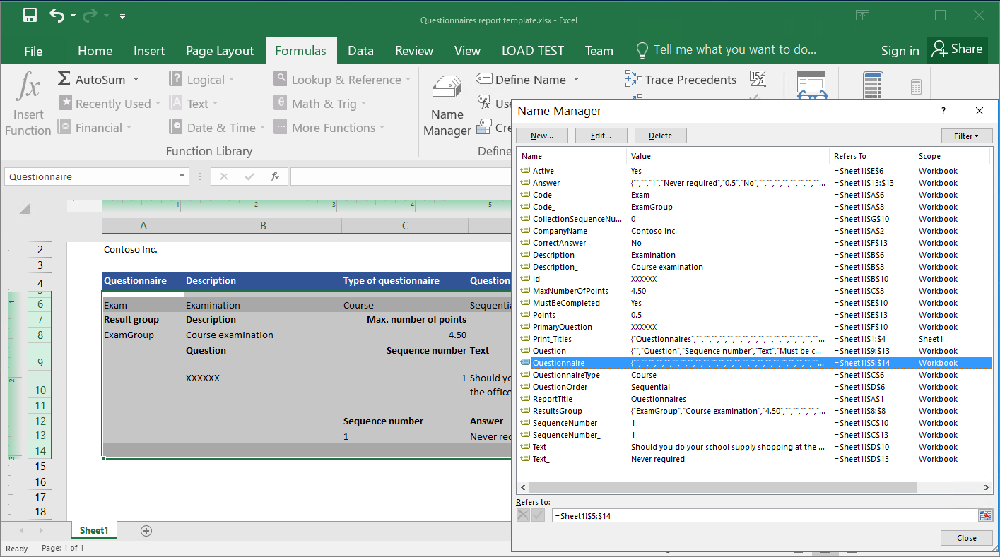
Konfigurieren Sie ähnliche Bindungen für die verbleibenden Formatelemente, wie in der folgenden Tabelle beschrieben.
Note
In dieser Tabelle wird bei den Informationen in der Spalte "Datenquellenpfad" davon ausgegangen, dass die EB-Funktion relativer Pfad aktiviert ist.
Formatelementpfad Datenquellenpfad Excel \ReportTitle @"GER_LABEL:ReportTitle" Excel\CompanyName model.CompanyName Excel\Fragebogen model.Questionnaire Excel\Fragebogen\Aktiv @.Active, wobei @ model.Questionnaire ist Excel\Fragebogen\Code @.Code Excel\Fragebogen\Beschreibung @.Description Excel\Fragebogen\QuestionnaireType @.QuestionnaireType Excel\Fragebogen\QuestionOrder @.QuestionOrder Excel\Fragebogen\ResultsGroup\Code_ @.ResultsGroup.Code Excel\Fragebogen\ResultsGroup\Beschreibung_ @.ResultsGroup.Description Excel\Fragebogen\ResultsGroup\MaxNumberOfPoints @.ResultsGroup.MaxNumberOfPoint Excel\Fragebogen\Frage @.Question Excel\Fragebogen\Frage\CollectionSequenceNumber @.CollectionSequenceNumber, wobei @ model.Questionnaire.Question ist Excel\Fragebogen\Frage\ID @.Id Excel\Fragebogen\Fragen\MustBeCompleted @.MustBeCompleted Excel\Fragebogen\Frage\PrimaryQuestion @.PrimaryQuestion Excel\Fragebogen\Frage\SequenceNumber @.SequenceNumber Excel\Fragebogen\Frage\Text @.Text Excel\Fragebogen\Frage\Antwort @.Answer Excel\Fragebogen\Frage\Antwort\CorrectAnswer @.CorrectAnswer, wobei @ model.Questionnaire.Answer ist Excel\Fragebogen\Frage\Antwort\Punkte @.Points Excel\Fragebogen\Frage\Antwort\Text @.Text Klicken Sie abschließend auf Speichern.
Die folgende Abbildung zeigt den Endzustand der konfigurierten Datenbindungen auf der Seite Formatdesigner.
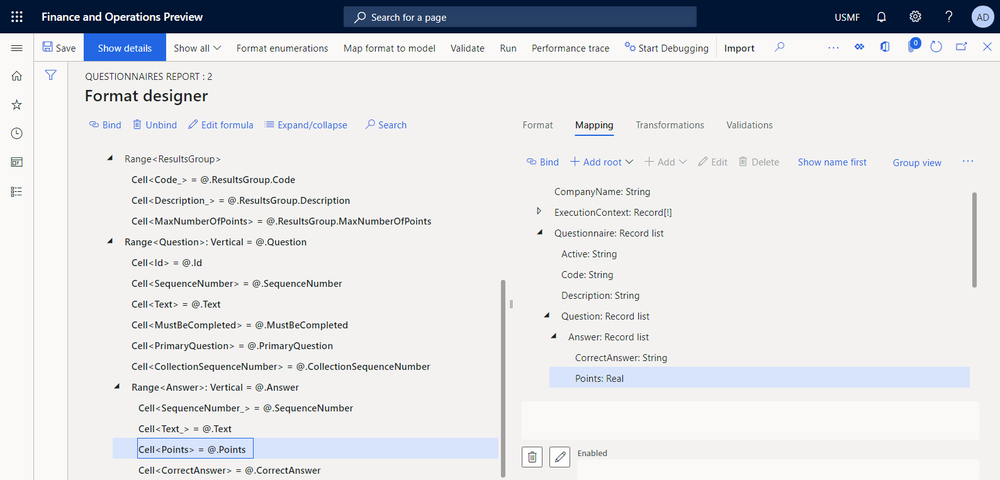
Important
Die gesamte Sammlung angegebener Datenquellen und Bindungen stellt eine Formatzuordnungskomponente des konfigurierten Formats dar. Diese Formatzuordnung wird aufgerufen, wenn Sie das konfigurierte Format für die Berichterstellung ausführen.
Verwenden eines entworfenen Formats aus EB
Sie können jetzt ein entworfenes Format für Testzwecke über die Seite Konfigurationen ausführen.
- Wechseln Sie zu Organisationsverwaltung > Elektronische Berichterstellung > Konfigurationen.
- Erweitern Sie auf der Seite Konfigurationen in der Konfigurationsstruktur Zahlungsmodell und wählen Sie dann Fragebogenbericht aus.
- Wählen Sie Designer für die Formatversion mit dem Status Entwurf aus.
- Wählen Sie auf der Seite Formatdesigner die Option Ausführen aus.
- Konfigurieren Sie im Dialogfeld EB-Parameter im Inforegister Einzuschließende Datensätze die Filteroptionen, sodass nur der Fragebogen SBCCrsExam inhalten ist.
- Wählen Sie OK, um die Filteroptionen zu bestätigen.
- Wählen Sie zum Ausführen des Berichts OK aus.
- Prüfen Sie den generierten Bericht.
Über Standard wird ein generierter Bericht als Excel-Datei geliefert, die Sie herunterladen können. Die folgenden Abbildungen zeigen zwei Seiten des generierten Berichts im Excel-Format.
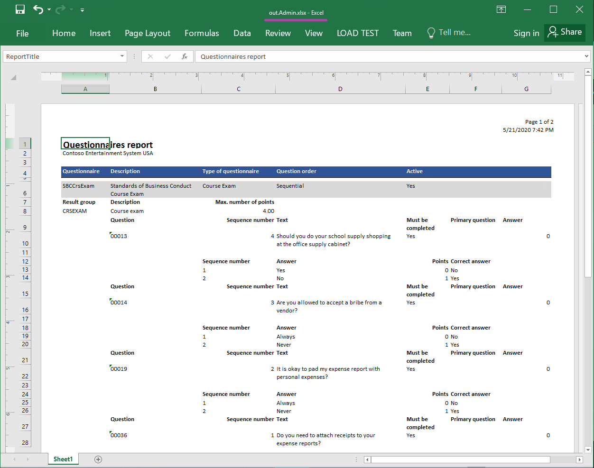
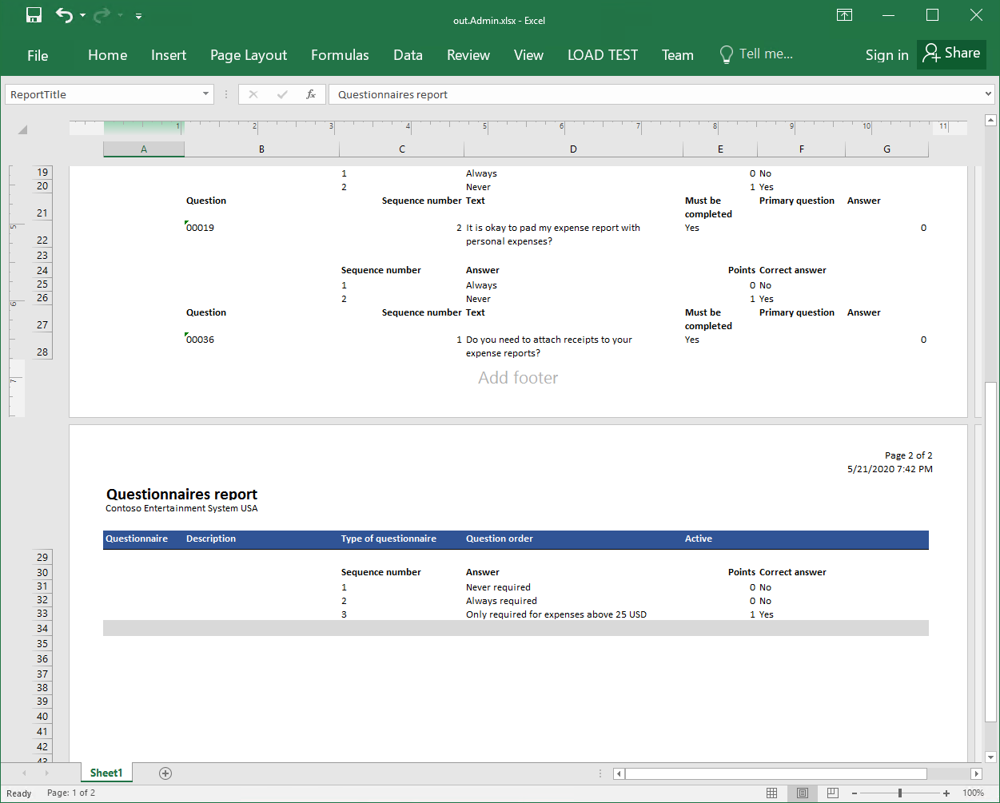
Anpassen eines entworfenes Format
Ändern eines Formats, um den Namen eines generierten Dokuments zu ändern
Standardmäßig wird ein generiertes Dokument unter Verwendung des Alias des aktuellen Benutzers benannt. Durch Ändern des Formats können Sie dieses Verhalten so ändern, dass ein generiertes Dokument basierend auf Ihrer benutzerdefinierten Logik benannt wird. Der Name eines generierten Dokuments kann beispielsweise auf dem aktuellen Sitzungsdatum und der aktuellen Sitzungszeit sowie auf dem Titel des Berichts basieren.
- Wählen Sie auf der Seite Formatdesigner das Stammobjekt Bericht aus.
- Wählen Sie auf der Registerkarte Zuordnung den Eintrag Dateinamen bearbeiten aus.
- Geben Sie im Feld Formel den Eintrag CONCATENATE (@"GER_LABEL:ReportTitle", " - ", DATETIMEFORMAT(SESSIONNOW(), "JJJJ-MM-TT SS-MM-SS")) ein.
- Klicken Sie auf Speichern und schließen Sie den Formeleditor.
- Wählen Sie Speichern aus.
Ändern eines Formats, um die Abfolge von Fragen zu ändern
Die Fragen sind in einem generierten Bericht nicht richtig geordnet. Sie können die Reihenfolge ändern, indem Sie das Format ändern.
Wählen Sie auf der Seite Formatdesigner das Stammobjekt Bericht aus.
Erweitern Sie auf der Registerkarte Zuordnung in der Formatstruktur Bericht\Fragebogen\Frage.
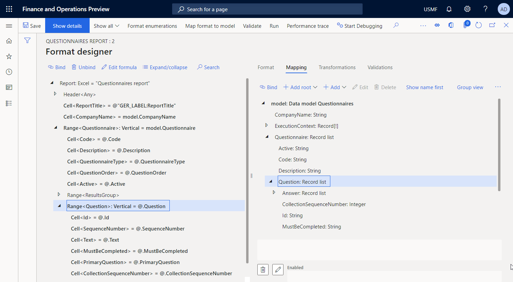
Wählen Sie auf der Registerkarte Zuordnung den Eintrag model.Questionnaire aus.
Wählen Sie Hinweis > Funktionen\Berechnetes Feld aus und geben Sie im Feld Name den Eintrag OrderedQuestions ein.
Wählen Sie Formel bearbeiten aus.
Geben Sie im Formeleditor im Feld Formel den Eintrag ORDERBY (model.Questionnaire.Question, model.Questionnaire.Question.SequenceNumber) ein, um die Liste der Fragen des aktuellen Fragebogens nach der laufenden Nummer zu ordnen.
Klicken Sie auf Speichern und schließen Sie den Formeleditor.
Wählen Sie OK aus, um die Eingabe eines neuen berechneten Feldes abzuschließen.
Wählen Sie auf der Registerkarte Zuordnung den Eintrag model.Questionnaire.OrderedQuestions aus.
Wählen Sie in der Formatstruktur Excel\Fragebogen\Frage aus.
Wählen Sie Binden aus und bestätigen Sie dann, dass der aktuelle Pfad model.Questionnaire.Questions in allen Bindungen verschachtelter Elemente durch den neuen Pfad model.Questionnaire.OrderedQuestions ersetzt wird.
Wählen Sie Speichern aus.
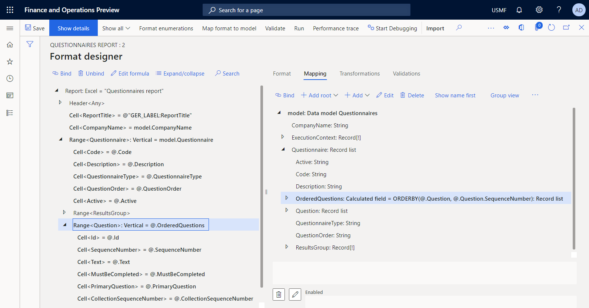
Verwenden eines geänderten Formats aus EB
Sie können jetzt ein geändertes Format zu Testzwecken über das EB-Framework ausführen.
- Wählen Sie auf der Seite Formatdesigner die Option Ausführen aus.
- Konfigurieren Sie im Dialogfeld EB-Parameter im Inforegister Einzuschließende Datensätze die Filteroptionen, sodass nur der Fragebogen SBCCrsExam inhalten ist.
- Wählen Sie OK, um die Filteroptionen zu bestätigen.
- Wählen Sie zum Ausführen des Berichts OK aus.
- Prüfen Sie den generierten Bericht.
Die folgende Abbildung zeigt einen generierten Bericht im Excel-Format, in dem die Fragen korrekt sortiert sind.
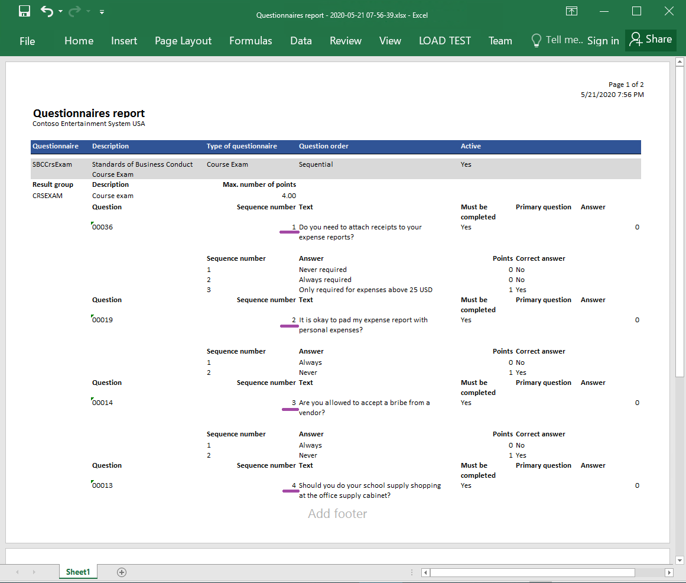
Abschließen des Formatentwurfs
- Wechseln Sie zu Organisationsverwaltung > Elektronische Berichterstellung > Konfigurationen.
- Erweitern Sie auf der Seite Konfigurationen in der Konfigurationsstruktur Zahlungsmodell und wählen Sie dann Fragebogenbericht aus.
- Wählen Sie im Inforegister Versionen die Konfigurationsversion mit dem Status Entwurf aus.
- Wählen Sie Status ändern > Abgeschlossen.
Der Status von Version 1.1 dieser Konfiguration wird von Entwurf zu Abgeschlossen geändert. Version 1.1 kann nicht mehr geändert werden. Diese Version enthält das konfigurierte Format und kann zum Drucken Ihres benutzerdefinierten Berichts verwendet werden. Version 1.2 dieser Konfiguration wird erstellt und hat den Status Entwurf. Sie können diese Version bearbeiten, um das Format Ihres Berichts Fragebogen anzupassen.
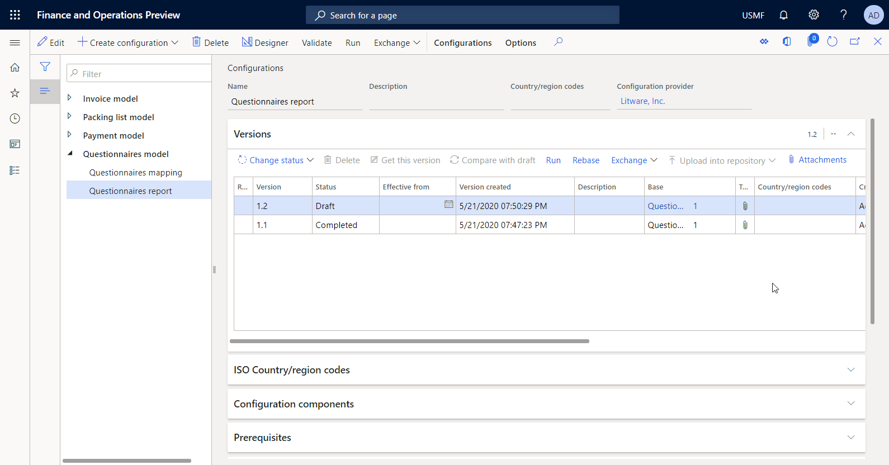
Note
Das konfigurierte Format ist Ihr Design des Berichts Fragebogen und es enthält keine Beziehungen zu den finanzspezifischen Artefakten.
Entwickeln von Anwendungsartefakten, um den entworfenen Bericht aufzurufen
Als Benutzer in der Rolle "Systemadministrator" müssen Sie eine neue Logik entwickeln, damit das konfigurierte EB-Format über die Benutzeroberfläche der Anwendung aufgerufen werden kann, um Ihren benutzerdefinierten Bericht zu generieren. Derzeit bietet EB keine Möglichkeit zum Konfigurieren dieser Art von Logik. Daher sind einige technische Arbeiten erforderlich.
Zum Entwickeln der neuen Logik müssen Sie eine Topologie bereitstellen, die einen fortlaufenden Build unterstützt . Weitere Informationen finden Sie unter Bereitstellen von Topologien, die fortlaufenden Build und Testautomatisierung unterstützen (This is an external link) Sie unter. Sie müssen zudem Zugriff auf die Entwicklungsumgebung für diese Topologie haben. Weitere Informationen zur verfügbaren ER API finden Sie unter EB-Framework-API (This is an external link).
Quellcode ändern
Hinzufügen einer Datenvertragsklasse
Fügen Sie die neue Klasse QuestionnairesErReportContract in Ihr Microsoft Visual Studio-Projekt ein und schreiben Sie den Code, mit dem der Datenvertrag angegeben wird, der zum Ausführen des konfigurierten EB-Formats verwendet werden kann.
/// <summary>
/// This class is the data contract class for the <c>QuestionnairesErReportDP</c> class.
/// </summary>
/// <remarks>
/// This is the data contract class for the Questionnaires ER report.
/// </remarks>
[
DataContractAttribute,
SysOperationContractProcessingAttribute(classStr(QuestionnairesErReportUIBuilder))
]
public class QuestionnairesErReportContract extends ERFormatMappingRunBaseContract implements SysOperationValidatable
{
ERFormatMappingId formatMapping;
/// <summary>
/// Validates the report parameters.
/// </summary>
/// <returns>
/// true if no errors; otherwise, false.
/// </returns>
public boolean validate()
{
boolean ret = true;
if (!formatMapping)
{
ret = checkFailed(strFmt("@SYS26332", new SysDictType(extendedTypeNum(ERFormatMappingId)).label()));
}
return ret;
}
[
DataMemberAttribute('FormatMapping'),
SysOperationLabelAttribute(literalstr("@ElectronicReporting:FormatMapping")),
SysOperationHelpTextAttribute(literalstr("@ElectronicReporting:FormatMapping"))
]
public ERFormatMappingId parmFormatMapping(ERFormatMappingId _formatMapping = formatMapping)
{
formatMapping = _formatMapping;
return formatMapping;
}
}
Hinzufügen einer UI-Builder-Klasse
Fügen Sie die neue Klasse QuestionnairesErReportUIBuilder in Ihr Projekt Visual Studio ein und schreiben Sie Code, um ein Laufzeitdialogfeld zu generieren, mit deren Hilfe Sie die Formatzuordnungs-ID des EB-Formats gesucht wird, die ausgeführt werden muss. Der angegebene Code sucht nur EB-Formate, die eine Datenquelle des Typs Datenmodell enthalten, die sich auf das Datenmodell Questionnaires bezieht, indem die Definition von Stamm verwendet wird.
Note
Alternativ können Sie EB-Integrationspunkte verwenden, um EB-Formate zu filtern. Weitere Informationen finden Sie unter API zum Anzeigen einer Formatzuordnungssuche (This is an external link).
/// <summary>
/// The UIBuilder class for Questionnaires ER report
/// </summary>
class QuestionnairesErReportUIBuilder extends SysOperationAutomaticUIBuilder
{
public const str ERQuestionnairesModel = 'Questionnaires';
public const str ERQuestionnairesDataContainer = 'Root';
/// <summary>
/// Action after build of the dialog UI.
/// </summary>
public void postBuild()
{
DialogField formatMapping;
super();
formatMapping = this.bindInfo().getDialogField(this.dataContractObject(),
methodStr(QuestionnairesErReportContract, parmFormatMapping));
formatMapping.registerOverrideMethod(
methodStr(FormReferenceControl, lookupReference),
methodStr(QuestionnairesErReportUIBuilder, formatMappingLookup),
this);
}
/// <summary>
/// Performs the lookup form for format mapping.
/// </summary>
/// <param name="_referenceGroupControl">
/// The control to perform lookup form.
/// </param>
public void formatMappingLookup(FormReferenceControl _referenceGroupControl)
{
ERObjectsFactory::createFormatMappingTableLookupForControlAndModel(
_referenceGroupControl,
ERQuestionnairesModel,
ERQuestionnairesDataContainer).performFormLookup();
}
}
Hinzufügen einer Datenanbieterklasse
Fügen Sie die neue Klasse QuestionnairesErReportContract in Ihr Microsoft Visual Studio-Projekt ein und schreiben Sie den Code, mit dem der Datenanbieter eingeführt wird, der zum Ausführen des konfigurierten EB-Formats verwendet werden kann. Der bereitgestellte Code enthält nur den Datenvertrag für diesen Datenanbieter.
/// <summary>
/// Data provider class for Questionnaires ER report.
/// </summary>
public class QuestionnairesErReportDP
{
QuestionnairesErReportContract contract;
public static QuestionnairesErReportDP construct()
{
QuestionnairesErReportDP dataProvider;
dataProvider = new QuestionnairesErReportDP();
return dataProvider;
}
}
Hinzufügen einer Beschriftungsdatei
Fügen Sie die neue Beschriftungsdatei QuestionnairesErReportLabels_en-US in Ihr Visual Studio-Projekt ein und geben Sie die folgenden Beschriftungen für neue UI-Ressourcen angeben:
- Die Beschrifung @QuestionnairesReport für eine neue Menüoption, die den folgenden Text in US-Englisch (en-US) enthält: Fragenbogenbericht (unterstützt von EB)
- Die Bezeichnung @QuestionnairesReportBatchJobDescription für einen Stapeljobtitel, wenn ein ausgewähltes EB-Format für die Ausführung als Stapeljob geplant ist
Hinzufügen einer Berichtserviceklasse
Fügen Sie die neue Klasse QuestionnairesErReportService in Ihr Visual Studio-Projekt ein und schreiben Sie Code, der ein EB-Format aufruft, es per Formatzuordnungs-ID identifiziert und einen Datenvertrag als Parameter bereitstellt.
using Microsoft.Dynamics365.LocalizationFramework;
/// <summary>
/// The electronic reporting service class for Questionnaires ER report
/// </summary>
class QuestionnairesErReportService extends SysOperationServiceBase
{
public const str ERModelDataSourceName = 'model';
public const str DefaultExportedFileName = 'Questionnaires report';
public const str ParametersDataSourceName = 'RunTimeParameters';
/// <summary>
/// Generates report by using Electronic reporting framework
/// </summary>
/// <param name = "_contract">The Questionnaires report contract</param>
public void generateReportByGER(QuestionnairesErReportContract _contract)
{
ERFormatMappingId formatMappingId;
QuestionnairesErReportDP dataProvider;
dataProvider = QuestionnairesErReportDP::construct();
formatMappingId = _contract.parmFormatMapping();
if (formatMappingId)
{
try
{
ERIModelDefinitionParamsAction parameters = new ERModelDefinitionParamsUIActionComposite()
.add(new ERModelDefinitionObjectParameterAction(ERModelDataSourceName, ParametersDataSourceName, _contract, true));
// Call ER to generate the report.
ERIFormatMappingRun formatMappingRun = ERObjectsFactory::createFormatMappingRunByFormatMappingId(formatMappingId, DefaultExportedFileName);
if (formatMappingRun.parmShowPromptDialog(true))
{
formatMappingRun.withParameter(parameters);
formatMappingRun.withFileDestination(_contract.getFileDestination());
formatMappingRun.run();
}
}
catch
{
// An error occurred while exporting data.
error("@SYP4861341");
}
}
else
{
// There is no data available.
info("@SYS300117");
}
}
}
Wenn Sie ein EB-Format verwenden müssen, in dem Anwendungsdaten ausgeführt werden, müssen Sie eine Datenquelle für den Typ Datenmodell in der Formatzuordnung konfigurieren. Diese Datenquelle bezieht sich auf einen bestimmten Teil des angegebenen Datenmodells unter Verwendung einer einzelnen Stammdefinition. Wenn das EB-Format ausgeführt wird, ruft es diese Datenquelle auf, um auf die entsprechende EB-Modellzuordnung zuzugreifen, die für ein bestimmtes Modell und eine bestimmte Stammdefinition konfiguriert ist.
Alle Informationen, die Sie möglicherweise im Quellcode vorbereiten und im Rahmen des Datenvertrags speichern, können mithilfe einer EB-Modellzuordnung dieses Typs an das laufende EB-Format übergeben werden. In der EB-Modellzuordnung müssen Sie eine Datenquelle des Typs Objekt konfigurieren, der sich auf die Klasse QuestionnairesErReportContract bezieht. Um eine Modellzuordnung zu identifizieren, müssen Sie eine Datenquelle angeben, die diese Modellzuordnung aufruft. Im bereitgestellten Code enthält diese Datenquelle, die durch die Konstante ERModelDataSourceName festgelegt wird, den Wert Modell enthält. Um festzustellen, welche Datenquelle zum Offenlegen des Datenvertrags in der Modellzuordnung verwendet wird, müssen Sie einen Datenquellennamen angeben. Im angegebenen Code wird dieser Name durch die Konstante ParametersDataSourceName angegeben, die den Wert RunTimeParameters enthält.
Note
In einer neuen Umgebung müssen Sie möglicherweise die EB-Metadaten aktualisieren, damit dieser Klassentyp im EB-Modellzuordnungsdesigner verfügbar ist. Weitere Informationen finden Sie unter Konfigurieren des EB-Frameworks (This is an external link).
Hinzufügen einer Bericht-Controller-Klasse
Fügen Sie die nee Klasse QuestionnairesErReportController in Ihr Visual Studio-Projekt ein und schreiben Sie Code, der ein EB-Format im synchronen oder Batch-Modus ausführt, im Dialogfeld, das entsprechend der Logik der angegebenen Klasse QuestionnairesErReportUIBuilder erstellt wird.
/// <summary>
/// The controller for Questionnaires ER report
/// </summary>
class QuestionnairesErReportController extends ERFormatMappingRunBaseController
{
/// <summary>
/// The main entrance of the controller
/// </summary>
/// <param name = "args">The arguments</param>
public static void main(Args args)
{
QuestionnairesErReportController operation;
operation = new QuestionnairesErReportController(
classStr(QuestionnairesErReportService),
methodStr(QuestionnairesErReportService, generateReportByGER),
SysOperationExecutionMode::Synchronous);
operation.startOperation();
}
/// <summary>
/// Gets caption of the dialog.
/// </summary>
/// <returns>Caption of the dialog</returns>
public ClassDescription defaultCaption()
{
ClassDescription batchDescription;
batchDescription = "Questionnaires report (powered by ER)";
return batchDescription;
}
}
Hinzufügen eines Menüpunkts
Fügen Sie den neuen Menüpunkt QuestionnairesErReport in Ihr Visual Studio-Projekt ein. In der Eigenschaft Objekt bezieht sich diese Menüoption auf die Klasse QuestionnairesErReportController und wird verwendet, um eine Benutzerberechtigung zum Auswählen und Ausführen eines EB-Formats festzulegen. In der Eigenschaft Beschriftung bezieht sich diese Menüoption auf die zuvor erstellte Beschriftung @QuestionnairesReport, sodass korrekter Text in der Anwendungs-UI angegeben wird.
Hinzufügen einer Menüoption in ein Menü
Fügen Sie das vorhandene Menü KM in Ihr Visual Studio-Projekt ein. Sie müssen ein neues Objekt von QuestionnairesErReport des Typs Ausgabe in dieses Menü einfügen. Dieser Artikel muss sich auf die Menüoption QuestionnairesErReport beziehen, die im vorigen Abschnitt beschrieben wird.
Erstellen eines Visual Studio-Projekts
Erstellen Sie Ihr Projekt, um Benutzern eine neue Menüoption zur Verfügung zu stellen.
Verwenden eines Formats von der Anwendung aus
Wählen Sie Fragebogen>Design>Fragebogenbericht (unterstützt von EB) aus.
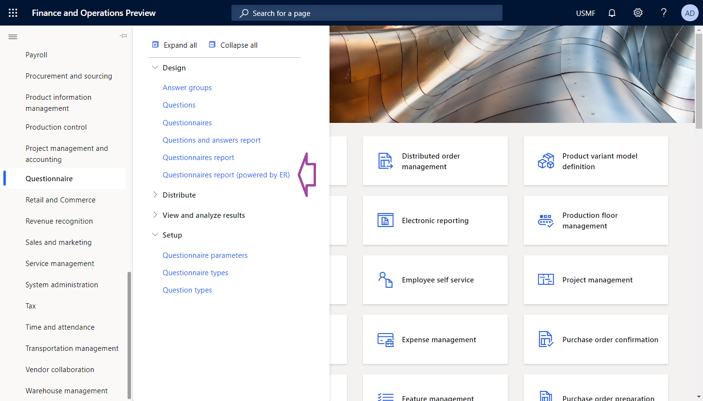
Wählen Sie im Dialogfeld im Feld Formatzuordnung den Eintrag Fragebogenbericht aus.
Wählen Sie OK.
Konfigurieren Sie im Dialogfeld Elektronische Berichtparameter im Inforegister Einzuschließende Datensätze die Filteroptionen, sodass nur der Fragebogen SBCCrsExam enthalten ist.
Wählen Sie OK, um die Filteroptionen zu bestätigen.
Wählen Sie zum Ausführen des Berichts OK aus.
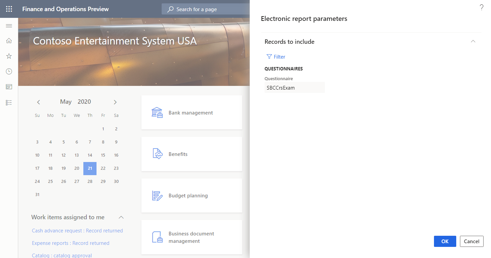
Prüfen Sie den generierten Bericht.
Optimieren einer entworfenen EB-Lösung
Sie können die konfigurierte EB-Lösung so ändern, dass sie die von Ihnen entwickelte Datenanbieterklasse verwendet, um auf Details des laufenden EB-Formats zuzugreifen, und den Namen dieses EB-Formats in einen generierten Bericht eingibt.
Ändern einer Modellzuordnung
Hinzufügen von Datenquellen für den Zugriff auf Datenvertragsobjekte
- Wechseln Sie zu Organisationsverwaltung > Elektronische Berichterstellung > Konfigurationen.
- Erweitern Sie auf der Seite Konfigurationen in der Konfigurationsstruktur Zahlungsmodell und wählen Sie dann Fragebogenzuordnung aus.
- Wählen Sie Designer aus, um die Seite Modell für Datenquellenzuordnung zu öffnen.
- Wählen Sie Designer aus, um die ausgewählte Zuordnung im Modellzuordnungsdesigner zu öffnen.
- Wählen Sie auf der Seite Modellzuordnungsdesigner im Bereich Datenquellentypen den Eintrag Dynamics 365 for Operations\Objekt aus.
- Wählen Sie Stamm hinzufügen im Bereich Datenquellen aus.
- Geben Sie im Dialogfeld im Feld Name den Eintrag RunTimeParameters ein, wie im Quellcode der Klasse QuestionnairesErReportService festgelegt.
- Geben Sie im Feld Klasse den Eintrag QuestionnairesErReportContract ein, der bereits codiert wurde.
- Wählen Sie OK.
- Erweitern Sie RunTimeParameters.
Die hinzugefügte Datenquelle enthält Informationen zur Datensatz-ID der laufenden EB-Formatzuordnung.
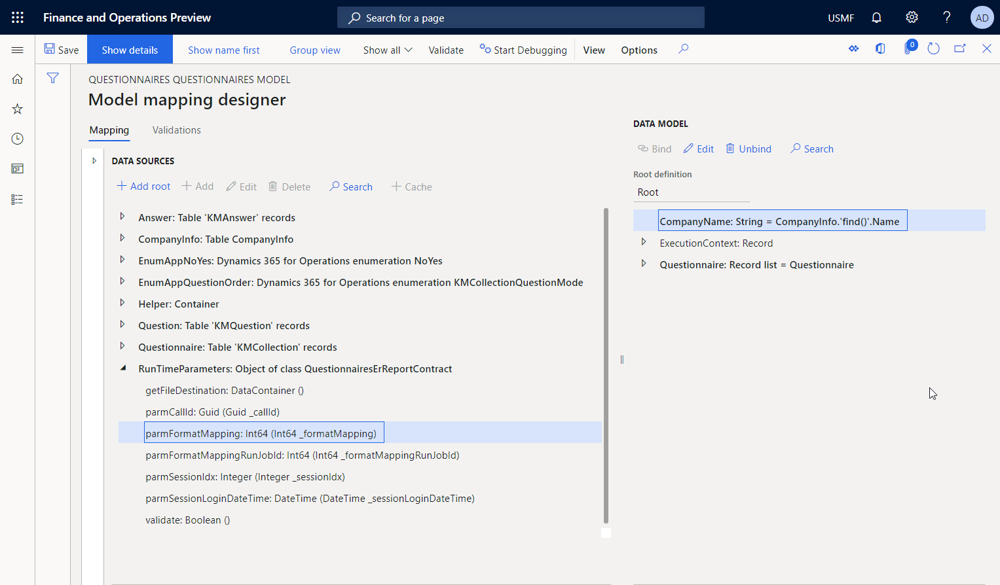
Hinzufügen einer Datenquelle, um auf EB-Formatzuordnungsdatensätze zuzugreifen
Bearbeiten Sie die ausgewählte Modellzuordnung weiter, indem Sie eine Datenquelle hinzufügen, um auf EB-Formatzuordnungsdatensätze zuzugreifen.
- Wählen Sie auf der Seite Modellzuordnungsdesigner im Bereich Datenquellentypen die Option Dynamics 365 for Operations\ Tabellendatensätze aus.
- Wählen Sie Stamm hinzufügen im Bereich Datenquellen aus.
- Geben Sie im Dialogfeld im Feld Name den Eintrag ER1 ein.
- Geben Sie im Feld Tabelle den Eintrag ERFormatMappingTable ein.
- Wählen Sie OK.
Hinzufügen einer Datenquelle, um auf einen Formatzuordnungsdatensatz eines aktiven EB-Formats zuzugreifen
Bearbeiten Sie die ausgewählte Modellzuordnung weiter, indem Sie eine Datenquelle hinzufügen, um auf den Formatzuordnungsdatensatz des aktiven EB-Formats zuzugreifen.
- Wählen Sie auf der Seite Modellzuordnungsdesigner im Feld Datenquellentypen den Eintrag Funktionen\Berechnetes Feld aus.
- Wählen Sie Stamm hinzufügen im Bereich Datenquellen aus.
- Geben Sie im Dialogfeld im Feld Name den Eintrag ER2 ein.
- Wählen Sie Formel bearbeiten aus.
- Geben Sie im Formeleditor im Feld Formel den Eintrag FIRSTORNULL (FILTER (ER1, ER1.RecId = RunTimeParameters.parmFormatMapping)) ein.
- Klicken Sie auf Speichern und schließen Sie den Formeleditor.
- Wählen Sie OK.
Eingeben des Namens des aktiven EB-Formats im Datenmodell
Bearbeiten Sie die ausgewählte Modellzuordnung weiter, sodass der Name des aktiven EB-Formats in das Datenmodell eingegeben wird.
- Erweitern Sie auf der Seite Modellzuordnungsdesigner im Bereich Datenmodell ExecutionContext und wählen Sie dann ExecutionContext\FormatName aus.
- Wählen Sie im Bereich Datenmodell die Option Bearbeiten aus, um eine Datenbindung für das Feld des ausgewählten Datenmodells zu konfigurieren.
- Geben Sie im Formeleditor im Feld Formel den Eintrag FIRSTORNULL (ER2.'>Relations'.Format).Name ein.
- Klicken Sie auf Speichern und schließen Sie den Formeleditor.
Da Sie das Feld FormatName verwendet haben, zeigt die konfigurierte Modellzuordnung jetzt den Namen eines EB-Formats, durch den diese Modellzuordnung bei der Ausführung aufgerufen wird.
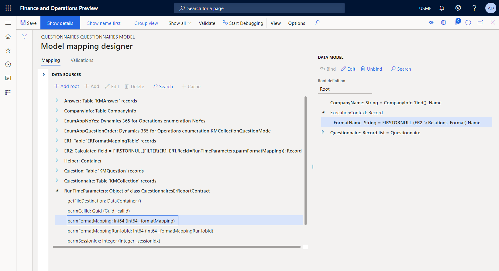
Vervollständigen des Designs der Modellzuordnung
- Wählen Sie auf der Seite Modellzuordnungsdesigner die Option Speichern aus.
- Schließen Sie die Seite.
- Schließen Sie die Seite "Modellzuordnungen".
- Stellen Sie auf der Seite Konfigurationen sicher, das die Konfiguration Fragebogenzuordnung noch ausgewählt ist. Wählen Sie dann auf dem Inforegister Versionen die Konfigurationsversion mit dem Status Entwurf aus.
- Wählen Sie Status ändern > Abgeschlossen.
Der Status der Version 1.2 dieser Konfiguration wird von Entwurf zu Abgeschlossen geändert. Version 1.2 kann nicht mehr geändert werden. Diese Version enthält das konfigurierte Modellzuordnung und kann als Basis für andere EB-Konfigurationen verwendet werden. Version 1.3 dieser Konfiguration wird erstellt und hat den Status Entwurf. Sie können diese Version bearbeiten, um die Modellzuordnung Fragebogen anzupassen.
Ändern eines Formats
Sie können das konfigurierte EB-Format so ändern, dass sein Name in der Fußzeile eines Berichts angezeigt wird, der beim Ausführen des EB-Formats generiert wird.
Hinzufügen eines neuen Formatelements
- Wechseln Sie zu Organisationsverwaltung > Elektronische Berichterstellung > Konfigurationen.
- Erweitern Sie auf der Seite Konfigurationen in der Konfigurationsstruktur Zahlungsmodell und wählen Sie dann Fragebogenbericht aus.
- Wählen Sie Designer aus.
- Wählen Sie auf der Seite Formatdesigner das Stammobjekt Bericht aus.
- Wählen Sie Hinzufügen, um ein neues verschachteltes Formatelement für das ausgewählte Stammelement Bericht hinzuzufügen.
- Wählen Sie Excel \Fußzeile aus.
- Geben Sie im Feld Name die Bezeichnung Fußzeile ein.
- Wählen Sie Bericht\Fußzeile und dann Hinzufügen aus.
- Wählen Sie Text \String aus.
Binden des hinzugefügten Formatelements
- Wählen Sie auf der Seite Formatdesigner auf der Registerkarte Zuordnung in der Formatstruktur für das aktive Element Fußzeile\String den Eintrag Formel bearbeiten aus.
- Geben Sie im Formeleditor im Feld Formel den Eintrag CONCATENATE ("&C&10", FORMAT("Generated by'%1' ER solution", model.ExecutionContext.FormatName)) ein.
- Klicken Sie auf Speichern und schließen Sie den Formeleditor.
- Wählen Sie Speichern aus.
Das konfigurierte Format wurde jetzt so geändert, dass sein Name in die Fußzeile eines generierten Berichts im Format Fußzeile \String-Element eingegeben wird.
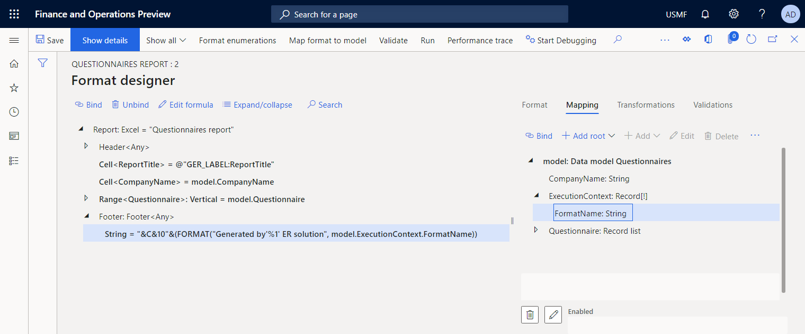
Abschließen des Formatentwurfs
- Seite Format-Designer schließen.
- Stellen Sie auf der Seite Konfigurationen sicher, das die Konfiguration Fragebogenbericht noch ausgewählt ist. Wählen Sie dann auf dem Inforegister Versionen die Konfigurationsversion mit dem Status Entwurf aus.
- Wählen Sie Status ändern > Abgeschlossen.
Der Status der Version 1.2 dieser Konfiguration wird von Entwurf zu Abgeschlossen geändert. Version 1.2 kann nicht mehr geändert werden. Diese Version enthält das konfigurierte Format und kann als Basis für andere EB-Konfigurationen verwendet werden. Version 1.3 dieser Konfiguration wird erstellt und hat den Status Entwurf. Sie können diese Version bearbeiten, um den Bericht Fragebogen anzupassen.
Verwenden eines Formats von der Anwendung aus
- Wählen Sie Fragebogen>Design>Fragebogenbericht (unterstützt von EB) aus.
- Wählen Sie im Dialogfeld im Feld Formatzuordnung den Eintrag Fragebogenbericht aus.
- Wählen Sie OK.
- Konfigurieren Sie im Dialogfeld EB-Parameter im Inforegister Einzuschließende Datensätze die Filteroptionen, sodass nur der Fragebogen SBCCrsExam inhalten ist.
- Wählen Sie OK, um die Filteroptionen zu bestätigen.
- Wählen Sie zum Ausführen des Berichts OK aus.
- Überprüfen Sie den generierten Bericht im Excel-Format.
Beachten Sie, dass die Fußzeile des generierten Berichts den Namen des EB-Formats enthält, mit dem er generiert wurde.
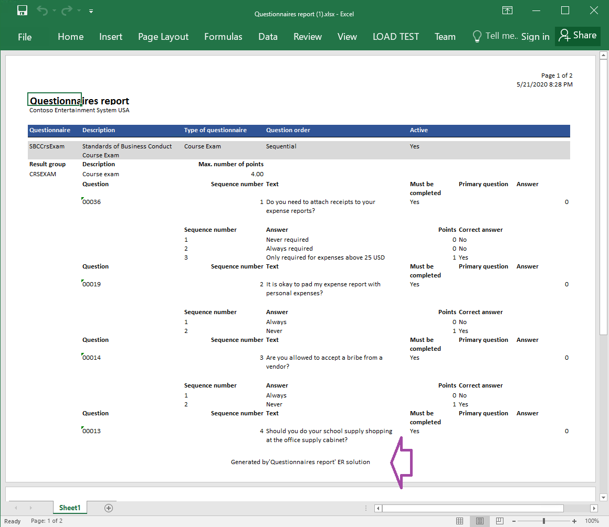
Verwenden eines Formats von EB aus
- Wechseln Sie zu Organisationsverwaltung > Elektronische Berichterstellung > Konfigurationen.
- Erweitern Sie auf der Seite Konfigurationen in der Konfigurationsstruktur Zahlungsmodell und wählen Sie dann Fragebogenbericht aus.
- Wählen Sie im Aktivitätsbereich auf Ausführen.
- Konfigurieren Sie im Dialogfeld Elektronische Berichtparameter im Inforegister Einzuschließende Datensätze die Filteroptionen, sodass nur der Fragebogen SBCCrsExam enthalten ist.
- Wählen Sie OK, um die Filteroptionen zu bestätigen.
- Wählen Sie zum Ausführen des Berichts OK aus.
- Überprüfen Sie den generierten Bericht im Excel-Format.
Beachten Sie, dass die Fußzeile des generierten Berichts nicht den Namen des EB-Formats enthält, mit dem er generiert wurde, da das Datenvertragsobjekt nicht an die laufende Modellzuordnung übergeben wurde, als es vom EB-Format aufgerufen wurde, das in EB ausgeführt wurde.
Konfigurieren eines Formatziels für die Bildschirmvorschau
- Wählen Sie Organisationsverwaltung > Elektronische Berichterstellung > Ziel der elektronischen Berichterstellung.
- Fügen Sie auf der Ziel der elektronischen Berichterstattung einen Zieldatensatz für das konfigurierte EB-Format Fragebogenbericht hinzu.
- Richten Sie auf dem Inforegister Dateizielort die Anzeige Ziel für die Formatkomponente Bericht ein, die mit hinzugefügt als Stammelement des konfigurierten EB-Formats Fragebogenbericht aufgenommen wurde.
- Geben Sie auf dem Inforegister PDF-Konvertierungseinstellungen das Ziel ein, um einem Bericht in das PDF-Format zu konvertieren, das die Seitenausrichtung Querformat verwendet.
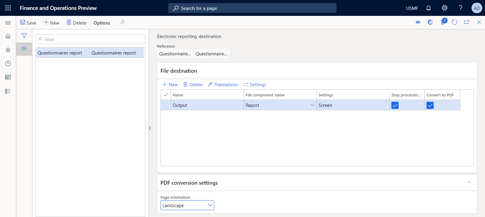
Ausführen eines Format von der Anwendung aus, um es als PDF-Dokument anzuzeigen
Wählen Sie Fragebogen>Design>Fragebogenbericht (unterstützt von EB) aus.
Wählen Sie im Dialogfeld im Feld Formatzuordnung den Eintrag Fragebogenbericht aus.
Wählen Sie OK.
Konfigurieren Sie im Dialogfeld Elektronische Berichtparameter im Inforegister Einzuschließende Datensätze die Filteroptionen, sodass nur der Fragebogen SBCCrsExam enthalten ist.
Wählen Sie OK, um die Filteroptionen zu bestätigen.
Beachten Sie auf dem Inforegister Zielorte, dass das Feld Ausgabe auf Anzeige gesetzt ist. Wenn Sie das konfigurierte Ziel ändern möchten, wählen Sie Ändern aus.
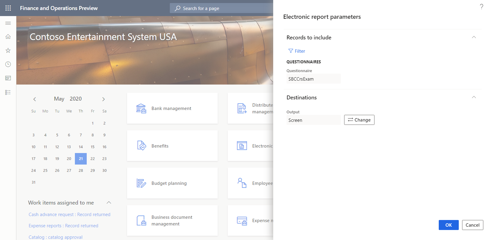
Wählen Sie zum Ausführen des Berichts OK aus.
Überprüfen Sie den generierten Bericht im PDF-Format.
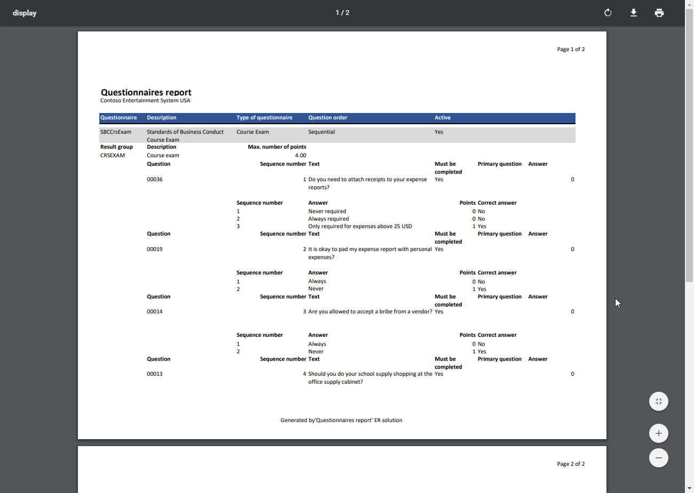
Zusätzliche Ressourcen
- Überblick über die elektronische Berichterstellung
- Formelsprache in der elektronischen Berichterstellung
- Mehrsprachige Berichte entwerfen
- ER-Framework-API (This is an external link)
- CASE-Funktion
- CONCATENATE-Funktion
- DATETIMEFORMAT-Funktion
- FILTER-Funktion
- FIRSTORNULL-Funktion
- FORMAT-Funktion
- IF-Funktion
- ORDERBY-Funktion
- SESSIONNOW-Funktion